Suplementos
Glicinato de magnesio

▼ Tocá para mas información
- ➥Mejora el sueño: Calma al sistema nervioso y relaja los músculos, ayudando a un descanso más profundo y reparador.
- ➥Reduce el estrés y ansiedad: Ayudan a disminuir los niveles de cortisol, favoreciendo el equilibrio emocional.
- ➥Salud muscular y nerviosa: Es clave para la contracción y relajación muscular normal. Previene calambres y espasmos.
- ➥Soporte muscular y nerviosa: Regula los niveles de glucosa en la sangre y apoya al funcionamiento rítmico del corazón.
- ➥Fortalecimiento óseo: Regula el calcio, siendo fundamental para mantener a los huesos fuertes.
Modo de consumo🛡️
Disolver la porción indicada en la etiqueta,
utilizando la cuchara dosificadora incluida dentro del envase.
Mezclarlo con agua o alguna otra bebida.
Consumirlo 30min antes de dormir
Golden Mix Moringuero

▼ Tocá para mas información
- ➥Acción antiinflamatoria: Reduce la inflamación crónica en el cuerpo, ayudando a aliviar dolores articulares y musculares.
- ➥Fortalece el sistema inmune: Refuerza las defensas naturales del organismo, gracias a su Vitamina C y la cúrcuma.
- ➥Apoyo digestivo: Ayuda al tránsito intestinal, mejora la digestión y reduce molestias estomacales e hinchazón.
- ➥Energia y vitalidad: Gracias a la moringa, por sus nutrientes combate el cansancio y brinda energía durante todo el día.
Modo de consumo🛡️
Tomar 1 a 2 capsulas al dia con agua, preferiblemente durante las comidas.
Golden Milk

▼ Tocá para mas información
- ➥Acción antiinflamatoria: Reduce los dolores articulares y musculares, lo cual es útil para las personas con artritis.
- ➥Refuerzo inmunológico: Fortalecen las defensas y previene resfriados.
- ➥Mejora la digestón: Gracias al jenjibre y la pimienta negra, alivia la hinchazón abdominal y los gases.
- ➥Bienestar mental y sueño: Si se consume tibia por la noche, ayuda a relajar el cuerpo y la mente, combatiendo el insomnio y mejorando el descanso.
- ➥Poder antioxidante: Combate el estrés y protege las células del envejecimiento prematuro.
Modo de consumo🛡️
Calienta una taza de leche (vacuna) o bebida vegetal (almendras, coco o avena), Luego agrega el polvo de Golden Milk a la bebida caliente. Le puedes añadir miel o stevia a gusto... Por ultimo mezcla bien hasta que el polvo se integre por completo. Se recomienda tomarlo 30 y 60min antes de dormir.
Hibiscus Complex

▼ Tocá para mas información
- ➥Acción antioxidante: Combate el envejecimiento celular y el daño oxidativo.
- ➥Salud digestiva: Ayuda a desinflamar, mejora e tránsito intestinal y favorece la digestión, siendo útil después de las comidas pesadas.
- ➥Salud cardiovascular: Es muy valorado por su capacidad de ayudar a regular la presión arterial y los niveles de colesterol en sangre.
- ➥Efecto diurético y detox: Elimina toxinas y liquidos retenidos, promoviendo una sensación de ligereza corporal.
- ➥Apoyo metabólico: El té verde acompaña el metabolismo de forma constante, ayudando a la quema de grasas y al control de peso.
Modo de consumo🛡️
Consumir de2 a 3 comprimidos por día. Tomarlos preferentemente con las comidas. No consumir en caso de tener presión arterial baja ya que el hibisco puede reducirla aún más.
Triple maca vigorizante

▼ Tocá para mas información
- ➥Energía y vitalidad: Proporciona un aumento en la energía física y mental, ayudando a combatir el descanso y la fatiga.
- ➥Rendimiento sexual: Actúa como un vigorizante que estimula el libido y puede mejorar la función sexual tanto en hombres como mujeres.
- ➥Equilibrio hormonal: Regula las hormonas, siendo beneficioso para aliviar sintomas de la menopausia y mejorar la fertilidad.
- ➥Rendimiento cognitivo: Contribuye a mejorar la memoria, el enfoque mental y la capacidad de aprendizaje.
- ➥Adaptógeno: Ayuda al cuerpo a gestionar mejor el estrés y fortalece el sistema inmunológico.
Modo de consumo🛡️
Leer cuántas capsulas tomar en el envase. Es preferible consumirla por la mañana o al mediodia, para aprovechar su efecto energizante y evitar que interfiera en el sueño nocturno.
Semillas de palta en polvo

▼ Tocá para mas información
- ➥Salud cardiovascular: Reduce el colesterol "malo"(LDL) y regula los triglicéridos.
- ➥Sistema inmunológico: Refuerza las defensas naturales del cuerpo, gracias a sus Vitaminas y compuestos fenólicos.
- ➥Digestión y peso: Mejora el tránsito intestinal, combate la inflamación y favorece la pérdida de peso al aumentar la saciedad.
- ➥Propiedades antioxidantes: Neutraliza los radicales libres, lo que podría retardar el envejecimiento celular.
Modo de consumo🛡️
Se puede consumir en infusiones, en acompañamiento de comidas, Batidos, yogures e incluso en el mate.
Clorofila

▼ Tocá para mas información
- ➥Salud digestiva: Calma la acidez estomacal y combate procesos inflamatorios.
- ➥Desintoxicación y PH: Al actuar como un desintoxicante general, elimina toxinas y metales pesados del sistema digestivo, tambien ayuda a regular el PH.
- ➥Energía y apariencia: Combate la fatiga y el estrés oxidativo, aportando una mayor energia natural y mejorando la apariencia de la piel.
- ➥Acción refrescante: Gracias a su combinación con sabor a menta, ayuda a neutralizar el mal aliento (halitosis).
- ➥Antioxidante: Gracias a su Vitamina C, protege las células contra el daño de los radicales libres.
Modo de consumo🛡️
Consumir de 1 a 2 tomas diarias de 5ml (1 cucharada),
solas o diluidas en agua o jugos naturales.
TOMA EN AYUNA... Si buscas efecto antioxidante y
un plus de energía para arrancar el día.
TOMA ANTES O DESPUÉS DE LAS COMIDAS...si buscas mejorar la digestión,
calmar la acidez estomacal o evitar la pesadez.
Vinagre de Manzana

▼ Tocá para mas información
- ➥Digestión: Alivia la inflamación abdominal y mejora la salud gastrointestinal.
- ➥Control glucémico: Ayuda a moderar y controlar los niveles de azúcar en la sangre, mejorando la sensibilidad a la insulina.
- ➥Control del apetito: Genera una mayor sensación de saciedad, lo que reduce la ingesta calórica y favorece el control de peso.
- ➥Antioxidante y defensas: Al tener Vitamina C incluido, actúa como un potente depurativo y refuerza el sistema inmunitario.
- ➥Salud cardiovascular: Tiene un efecto positivo sobre los niveles de colesterol y triglicéridos en sangre.
Modo de consumo🛡️
Consumir 1 a 3 cucharadas (de 5ml cada una) disueltas en un vaso de agua. Se puede consumir en cualquier momento del día o 30min antes/después de las comidas principales.
Vinagre de sidra de manzana en capsulas

▼ Tocá para mas información
- ➥Control glucémico: modera los picos de azúcar en sangre después de comer.
- ➥Soporte intestinal: Aporta enzimas digestivas y mejora el tránsito intestinal.
- ➥Estrategia de peso: Promueve la saciedad ayudando al control calório.
- ➥Acción antioxidante: Su contenido de Vitamina C refuerza las defensas del organismo.
Modo de consumo🛡️
Ingreir 1 cápsula al día acompañado con agua. Consumir 30min antes o después de alguna de las comidas principales(almuerzo o cena).
Jugo de Aloe vera Sistema digestivo

▼ Tocá para mas información
- ➥Depurativo y Detox: Limpia el aparato digestivo y elimina toxinas acumuladas.
- ➥Regulador intestinal: Favorece el transito intestinal y ayuda en casos de estreñimiento, pesadez o inflamación abdominal.
- ➥Alivio de síntomas: Mejora condiciones como gastritis, acidez y reflujo, debido a sus propiedades antiinflamatorias y alcalinizantes.
- ➥Salud hepatobiliar: Facilita la expulsión de bilis retenida en la vesícula y estimula la secreción biliar.
- ➥Inmunológico: Refuerza el sistema inmunológico y aumenta las defensas naturales del cuerpo.
- ➥Riqueza Nutricional: Aporta aminoácidos esenciales, minerales (calcio, magnesio, potasio y hierro) y Vitaminas (A, C, B1, B2, B6 y B12).
Modo de consumo🛡️
Ingerir de 1 a 2 cdas diarias (o tapitas)
diluidas en agua o algun jugo natural.
Se puede tomar en ayunas, 30min antes o después
de las comidas principales.
Omega-3 Vegetal

▼ Tocá para mas información
- ➥Salud cardiovascular: Regula los niveles de colesterol y triglicéridos, además de contribuir al control de la presión arterial.
- ➥Acción antiinflamatoria: Gracias a sus propiedades, son útiles en procesos inflamatorios generales y articulares.
- ➥Función cognitiva: Previene el deterioro cognitivo y mejora la comunicación entre neuronas.
- ➥Piel y digestión: Mejora la apariencia de la piel y favorece los procesos digestivos e intestinales.
- ➥Redimiento físico: Ayuda en la recuperación y rendimiento muscular tras el ejercicio.
Modo de consumo🛡️
Ingerir 1 cda de 5ml (equivalente a la tapita del envase) 1 vez por día. Se recomienda tomarlo 30min antes o después de las comidas prinicpales para optimizar su absorción.
Aceite de prímula

▼ Tocá para mas información
- ➥Equilibrio hormonal: Reduce el balance entre estrógenos y progesterona.
- ➥Salud hormonal: Alivia sintomas del síndrome premenstrual (como hinchazón, irritabilidad y calambres) y de la menopausia (sofocos, sequedad vaginal e insomnio).
- ➥Acción antiinflamatoria: Reduce los dolores musculares y articulares.
- ➥Cuidado de la piel y cabello: Ayuda a combatir el acné y fortalece el cabello.
- ➥Sistema inmunológico: Actúa como un potenciador de las defensas naturales del organismo.
Modo de consumo🛡️
Ingerir 1cda diaria (aprox. 5ml o una tapita del envase). Tomarlo en ayunas o 30min antes/después de las comidas principales.
Jugo de Aloe Vera máximas defensas

▼ Tocá para mas información
- ➥Sistema inmunológico: Refuerza las defensas naturales del cuerpo.
- ➥Salud digestiva: Regula el tránsito intestinal y favorece la restauración de la muscosa gástrica.
- ➥Desintoxicación: Colabora en la eliminación de toxinas y mejora la absorción de nutrientes.
- ➥Aporte nutricional: Contiene Vitaminas (A,C,B1,B6 y B12), aminoácidos esenciales y minerales (calcio, magnesio, potasio,zinc e hierro).
Modo de consumo🛡️
Ingerir de 1 a 2cdas soperas (aprox. 5ml por porción) por día, diluido en agua o algun jugo natural. Consumir 30min antes o después de las comidas principales.
Centella Asiática

▼ Tocá para mas información
- ➥Salud cutánea: Facilita la formación de colágeno, lo que aporta firmeza y elasticidad a la piel. Acelera la reparación de tejidos y la cicatrización.
- ➥Control de Celulitis: Gracias a sus propiedades, combate la celulitis y mejora la textura de la piel.
- ➥Soporte circulatorio: Alivia la sensación de piernas cansadas, varices y ademas al mejorar el tono de las paredes venosas.
- ➥Efecto detox: Contiene funciones depurativas y antioxidantes que protegen la piel de los radicales libres.
- ➥Sistema nervioso: Se considera un tónico que ayuda a mantener la concentración y la memoria.
Modo de consumo🛡️
Ingerir de 1 a 2 cásulas diarias. Se sugiere tomarlas antes de las comidas principales. Se puede consumir de forma continua, ya que no requiere periodos de descanso obligatorio.
Hierro Quelado

▼ Tocá para mas información
- ➥Combate la anemia: Estimula la producción de globulos rojos.
- ➥Aumenta la energía: Reduce el cansancio físico y mental.
- ➥Refuerza defensas: Fortalece el funcionamiento del sistema inmune.
Modo de consumo🛡️
Ingerir 1 capsula diaria.
Consumir 30min antes o después de cualquiera de sus pricipales comidas.
Para mejorar la absorción, puede tomar junto con Vitamina C
(como jugo de cítricos).
Creatina Dark Lab

▼ Tocá para mas información
- ➥ Energía cerebral: Activa las neuronas y reduce el cansancio de la mente.
- ➥ Mejor memoria: Ayuda a recordar más fácil y a pensar con mayor rapidez.
- ➥ Músculos más fuertes: Evita la pérdida de fuerza que viene con la edad.
- ➥ Menos caídas: Al dar mas estabilidad física, ayuda a prevenir accidentes.
- ➥ Más vitalidad: Brinda energía extra para las actividades de todos los días.
🛡️ Modo de consumo
La toma diaria constante es fundamental para mantener los niveles elevados de creatina en los músculos.
La dosis común es de 3gr, 1 vez por día.
Jugo de uva Tinto 100% natural

▼ Tocá para mas información
- ➥Salud cardiovascular: Protege al corazón y reduce la oxidsción dañina de lípidos (colesterol LDL).
- ➥Poder antioxidante: Combate el envejecimiento celular y el daño de los radicales libres.
- ➥Bbeida energética natural: Se considera una fuente de energía saludable, ideal para deportistas o cualquier momento del día.
Modo de consumo🛡️
Se consume fresco y para obtener una opción más ligera, se puede diluir con agua o agua con gas... Apto para todas las edades, desde niños hasta adultos mayores
Tintura madre Melisa

▼ Tocá para mas información
- ➥Relajante y sedante suave: Reduce estados de ansiedad, estrés y nerviosismo.
- ➥Mejora el sueño: Favorece el descanso profundo y ayuda a combatir el insomnio de manera natural.
- ➥Aliado digestivo: Alivia cólicos, gases, pesadez estomacal e indigestión nerviosa.
Modo de consumo🛡️
Tomar entre 15 a 20 gotas diluidas en un poco de agua. Se puede consumir de 1 a 3 veces al día. Para mejorar el sueño, tomarlo una dosis entre 30 y 60min antes de acostarse.
Tintura madre Garcinia Cambogia

▼ Tocá para mas información
- ➥Control del apetito: Reduce los antojos y la ansiedad por comer.
- ➥Bloquea grasas: Evita que los azúcares se transformen en tejido adiposo.
- ➥Usa reservas: Estimula al cuerpo a quemar la grasa acumulada.
- ➥Sin nerviosismo: No altera el sistema nervioso ni quita el sueño.
Modo de consumo🛡️
Consumir de 15 a 20 gotas en un vaso de agua. 3 veces por dia, entre 30 y 60min antes de las comidas principales.
Tintura Madre Fucus

▼ Tocá para mas información
- ➥Bajar de peso: Activa tu metabolismo para que quemes grasa de manera más eficiente.
- ➥Control de apetito: Se expande en el estomago y te da una sensación de llenado que reduce el hambre.
- ➥Evita retención de liquidos: Funciona como un diurético natural que te ayuda a deshincharte.
- ➥Mejora la digestión: Actua como un laxante suave, ayudando a regular el tránsito intestinal.
- ➥Aporta energía: Al estimular el metabolismo, te ayuda a sentir menos cansancio durante el día.
Modo de consumo🛡️
Consumir de 20 a 60 gotas diluidas en agua. Consumir antes de las comidas para aprovechar su efecto saciante.
Tintura Madre Ortiga

▼ Tocá para mas información
- ➥Depurativa: Purifica el organismo eliminando toxinas acumuladas.
- ➥Diurética: Estimula la producción de orina, reduce la retención de liquidos y previene cálculos renales.
- ➥Desinflamatoria: Alivia dolores articulares causados por artritis, artrosis y reumatismo.
- ➥Bienestar prostático: Colabora en el tratamiento y alivio de moestias por hipertrofia protática benigna.
- ➥Antialérgica: Refuerza defensas y mitiga síntomas de rinitis o alergias estacionales.
Modo de consumo🛡️
Diluir en agua entre 20 y 30 gotas. Generalmente se toma 2 a 3 veces al día, preferentemente alejado de las comidas.
Tintura madre Sen Hojas

▼ Tocá para mas información
- ➥Alivio del estreñimiento: Estimula el colon para facilitar la evacuación inestinal de forma rápida.
- ➥Ablandamiento de heces: Reduce la absorción de agua para permitir una eliminación menos dolorosa.
- ➥Acción depurativa: Favorece la expulsión de toxinas y desechos acumulados en el sistema digestivo.
- ➥Efecto predecible: Actúa habitualmente entre 6 y 12hs después de su ingesta nocturna.
Modo de consumo🛡️
Tomar entre 10 a 20 gotas diluidas en un vaso de agua. Tomarla por la noche, antes de acostarse.
Tintura Madre Cardo Mariano

▼ Tocá para mas información
- ➥Protege al hígado: Repara las células hepaticas dañadas por toxinas, alcohol o medicamentos.
- ➥Mejora la digestión: Estimula la producción de bilis, facilitando la digestión de grasas y aliviando la pesadez.
- ➥Desintoxica el organismo: Colabora de manera activa en la eliminación de impurezas y desechos del cuerpo.
- ➥Es antioxidante: Combate los radicales libres que causan el envejecimiento celular.
Modo de consumo🛡️
Tomar 20 gotas(1ml) en un vaso con agua, de 1 a 3 veces por día.
Tintura Madre Valeriana

▼ Tocá para mas información
- ➥Combate el insomnio: Ayuda a reconciliar el sueño rápido.
- ➥Reduce la ansiedad: Calma el estrés y los nervios.
- ➥Alivia tensiones: Relaja los espasmos musculares y cólicos
Modo de consumo🛡️
Tomar 20 gotas(1ml)en un vaso con agua,
de 1 a 3 veces por día.
Para mejorar el descanso se toma cerca del horario de descanso nocturno.
Tintura Madre pasionaria

▼ Tocá para mas información
- ➥Reduce el estrés: Alivia la ansiedad, los nervios y la tensión diaria.
- ➥Combate el insomnio: Favorece un sueño profundo, relajado y reparador.
- ➥Alivia tensiones: Ayuda a relajar espasmos y dolores musculares por nerviosismo.
Modo de consumo🛡️
Tomar 20 gotas diluidas en un vaso de agua.
Tomar de 1 a 3 veces al día.
Para trastornos de sueño, tomar antes de acostarse.
Caldo de huesos vacuno

▼ Tocá para mas información
- ➥Articulaciones: Fortalece cartílagos, tendones y huesos.
- ➥Piel y cabello: Aporta colágeno para dar elasticidad a la piel y fortalecer uñas y cabello.
- ➥Digestión: Protege y repara la mucosa del intestino.
- ➥Defensas: Aporta nutrientes que colaboran con el sistema inmunológico.
Modo de consumo🛡️
Consumir 2 comprimidos diarios, preferentemente en el desayuno.
Cáscara de huevo

▼ Tocá para mas información
- ➥Fortalece los huesos: Aporta calcio natural de alta absorción para prevenir la debilidad ósea.
- ➥Protege las articulaciones: Reduce el dolor y la rigidez articular.
- ➥Mejora la función muscular: El magnesio y calcio optimizan la contracción de los músculos.
- ➥Aporta energía celular: Contiene Coenzima Q10 y Vitamina B12 para el metabolismo energético.
Modo de consumo🛡️
Consumir 2 comprimidos diarios, preferentemente en el desayuno.
Caldo de huesos marino

▼ Tocá para mas información
- ➥Articulaciones y huesos: Fortalece la estructura ósea, reduce dolores articulares y mejora la movilidad.
- ➥Salud intestinal: Protege la mucosa del sistema digestivo y ayuda a aliviar trastornos como la gastritis.
- ➥Estética: Aporta colágeno que mejora la elasticidad de la piel y fortalece el cabello y las uñas.
- ➥Defensas: Aporta minerales esenciales que refuerzan el sistema inmunológico.
Modo de consumo🛡️
Consumir 2 comprimidos diarios, preferentemente en el desayuno.
Aceite de Romero

▼ Tocá para mas información
- ➥Hidrata profundamente: Mantiene la humedad de la piel.
- ➥Nutre intensamente: Aporta nutrientes esenciales para el tejido cutáneo.
- ➥Aporta firmeza: Ayuda a tonificar y mejorar la elasticidad.
- ➥Efecto astringente: Útil para equilibrar la piel y el cuero cabelludo.
- ➥Ideal para masajes: Facilita el deslizamiento y promueve la relajación corporal.
Modo de consumo🛡️
No consumir por vía oral... Para aplicacíon se utiliza una pequeña cantidad, ya sea en el cabello, o en la piel.
Aceite de orégano

▼ Tocá para mas información
- ➥Combate infecciones: Destruye bacterias, hongos (como la cándida) y virus.
- ➥Sube defensas: Fortalece el sistema inmunitario de forma natural.
- ➥Alivia la respiración: Calma la tos y limpia las vías aéreas.
- ➥Mejora la digestión: Reduce gases, pesadez y protege el estómago.
- ➥Sana la piel: Elimina hongos en uñas, acné y verrugas.
- ➥Reduce inflamación: Calma dolores musculares y articulares leves.
Modo de consumo🛡️
Ingrerir 4 gotas, 2 veces al día, 30min antes o despés
de las comidas peincipales.
Puedes mezclarla con agua o colocarlas bajo la lengua.
Para uso externo colocar 4 a 8 gotas de forma externa.
Zeolita extracto liquido

▼ Tocá para mas información
- ➥Elimina toxinas: Atrapa y expulsa del cuerpo metales pesados.
- ➥Efecto antioxidante: Limpia los radicales libres del organismo.
- ➥Regula el PH: Ayuda a equilibrar la acidez corporal.
- ➥Refuerza defensas: Favorece el sistema inmunológico y digestivo
Modo de consumo🛡️
Se recomiendas gotas en cantidades pequeñas, se suele aumentar la cantidad,
distribuida en varias tomas diarias durante un periodo de 4 a 6 semanas.
Disolver las gotas en agua o en jugos naturales.
Es fundamental batirlo con energía antes de usarlo.
Lax Fibras

▼ Tocá para mas información
- ➥Regula el tránsito: Alivia el estreñimiento de forma suave y natural.
- ➥Aumenta la motilidad: Favorece los movimientos del intestino.
- ➥Aporta fibra: Mejora la salud de la flora digestiva.
- ➥Efecto laxante suave: Ablanda las heces facilitando la evacuación.
Modo de consumo🛡️
Tomar 1 comprimido diario, 1 hora antes de acostarse, con un vaso de agua o jugo colmado.
Hierbas Medicinales
🌼Manzanilla
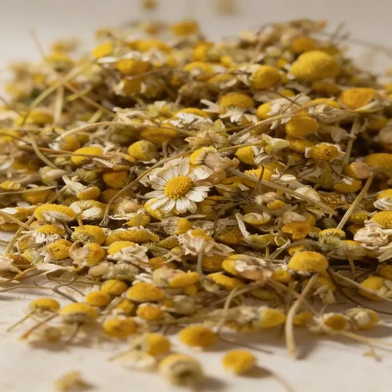
▼ Tocá para mas información
- ➥ Calma el estómago: Alivia los gases, dolor de panza y la pesadez después de comer.
- ➥ Ayuda a dormir: Relaja el cuerpo, reduce el estrés y te ayuda a descansar mejor.
- ➥ Sana la piel: Alivia las zonas rojas, las alergias y también a cerrar heridas leves si se usa fría.
- ➥ Reduce dolores: Calma las molestias de los cólicos cuando las mujeres tienen el periodo.
🍵 Como preparar
↪ En una taza con agua caliente, añade una cucharada de manzanilla.
↪ Tapa y deja reposar entre 5 y 10min.
↪ Pasa el líquido por un colador y disfrutalo tibio.
Cola de quirquincho

▼ Tocá para mas información
- ➥ Mejora el deseo sexual: Funciona como un vigorizante natural para hombres y mujeres.
- ➥ Protege el cerebro: Ayuda a cuidar las neuronas y mejora la memoria.
- ➥ Aumento de energía: Combate el cansancio físico y el agotamiento mental.
🍵 Como preparar
↪ Hierve agua y colocalo en una taza.
↪ Añade una cucharita muy pequeña de la cola de quirquincho.
↪ Tapa la taza y déjala reposar entre 10 y 15min, cuela el liquido y tómalo.
Puedes endulzarlo si te parece muy amargo.
💡También puedes agregar solo una ramita pequeña dentro del termo con agua caliente o en el mate.
🌺 Flor de Jamaica (Hibiscus)

▼ Tocá para mas información
- ➥ Baja la presión: Ayuda a controlar la presión baja y limpia las arterias.
- ➥ Bajar de peso: Evita que tu cuerpo absorba tanta grasa y azúcares.
- ➥ Elimina líquidos: Actúa como un diurético, lo que quita la hinchazón del cuerpo.
- ➥ Combate el colesterol: Reduce la grasa mala en la sangre.
- ➥ Contiene gran cantidad de Vitaminas: Fortalece las defensas para no enfermarse de seguido.
🍵 Como preparar
↪ Pon a calentar 1 litro de agua.
↪ Cuando empiece a hervir, añade 2 cdas soperas de flores secas de Jamaica (10gr).
↪ Apaga el fuego, tapa la olla y deja reposar 10min.
↪ Cuela el liquido y tomalo caliente o dejalo enfriar para tomarlo como agua fresca.
💡Evita el azúcar. Si prefieres endulzar, usa un toque de Stevia o miel.
🍃 Menta
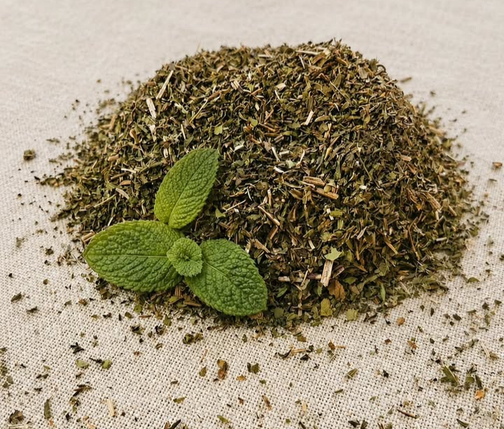
▼ Tocá para mas información
- ➥ Mejora la digestión: Alivia gases, la hinchazón y el dolor de panza.
- ➥ Descongestiona: Ayuda a respirar mejor cuando tienes gripe o tos.
- ➥ Calma dolores: Calma dolores de cabeza y dolores musculares.
- ➥ Quita mal aliento: Elimina las bacterias de la boca.
- ➥ Relaja: Ayuda a bajar el estrés y la ansiedad.
🍵 Como preparar
↪ Coloca agua caliente en una taza.
↪ Añade 1 cucharita de menta.
↪ Tapa y deja reposar 10min.
↪ Cuela y ya esta listo para disfrutar!
Laurel
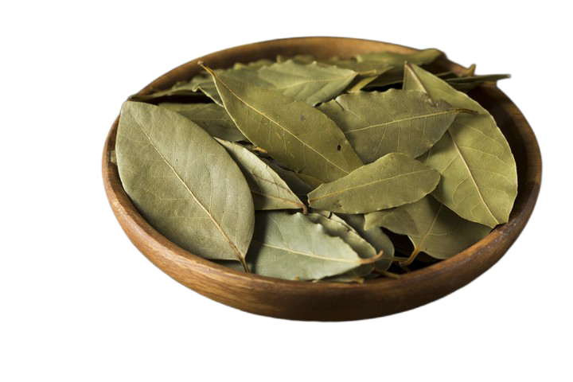
▼ Tocá para mas información
- ➥ Alivia la digestión: Reduce gases, la hinchazón y dolor de panza.
- ➥ Mejora la respiración: Combate la tos y desinflama los pulmones.
- ➥ Reduce dolores: Alivia molestias en músculos y articulaciones.
- ➥ Calma el estrés: Relaja la mente y ayuda a dormir mejor.
- ➥ Controla el azúcar: Ayuda a regular los niveles de glucosa en sangre.
🍵 Como preparar
↪ Hierve de 3 a 4 hojas secas con agua por 5min.
↪ Tapa y deja reposar.
↪ Colocalo en una taza y tomalo para la digestión o el estrés.
Tomillo
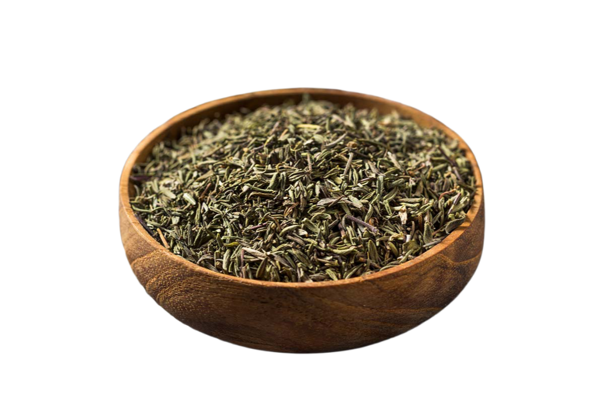
▼ Tocá para mas información
- ➥ Alivia la tos: Abre los pulmones y te ayuda a sacar las flemas cuando estás resfriado.
- ➥ Mejora la digestión: Evita gases y quita el dolor de panza después de comer pesado.
- ➥ Mata gérmenes: Funciona como escudo que limpia y combate bacterias y hongos.
- ➥ Protege tus células: Mantiene tu cuerpo fuerte y sano gracias a sus antioxidantes.
🍵 Como preparar
↪ Hierve agua.
↪ Coloca en una taza y añade una cucharadita de tomillo.
↪ Tapa la taza y deja reposar 10min.
↪ Cuela y disfruta!
💡Puedes endulzarlo con miel y agregar unas gotas de limón.
Zarza
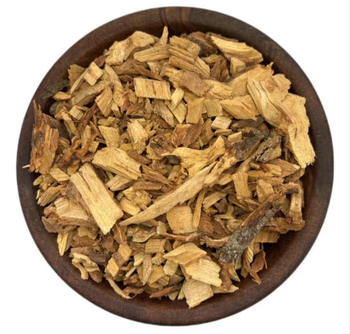
▼ Tocá para mas información
- ➥ Limpia la piel: Combate el acné, las eccemas, la psoriasis y la dermatitis.
- ➥ Purifica la sangre: Funciona como un excelente depurativo natural que elimina toxinas.
- ➥ Evita retención de líquidos: Tiene un fuerte efecto diurético que estimula el trabajo de los riñones.
- ➥ Alivia dolores: Reduce la inflamación en las articulaciones, siendo útil para el reumatismo y la artritis.
- ➥ Protege el hígado: Mejora la función hepática y defiendea a las células del cuerpo.
🍵 Como preparar
↪ Hierve con agua una cucharada sopera (aprox. 5 y 10gr) de zarza.
↪ Dejalo a fuego suave durante 5-10min.
↪Apaga el fuego, tapa el recipiente y deja reposar durante 10min.
↪ Colar el líquido y puedes tomarlo tanto tibio como frío.
Peperina
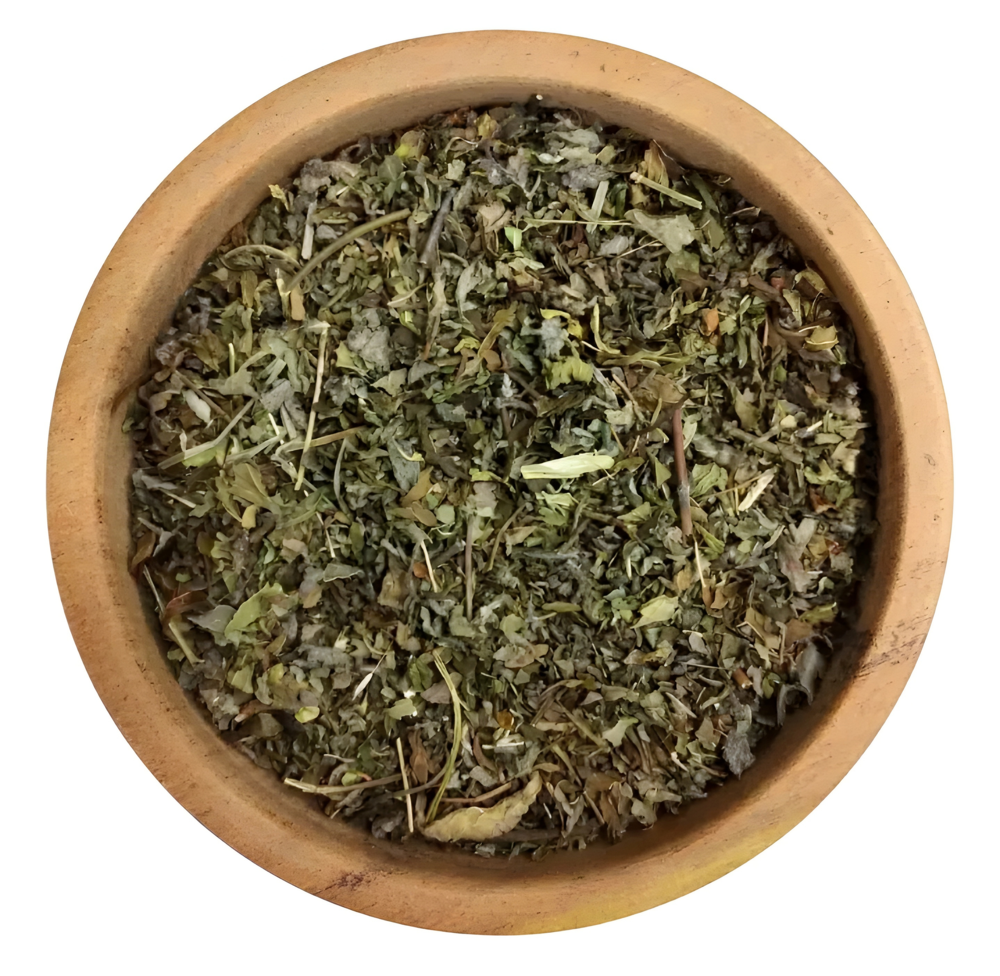
▼ Tocá para mas información
- ➥ Alivia la digestió: Calma el dolor de panza, reduce gases, evita la pesadez después de comer y ayuda contra los vómitos.
- ➥ Mejora la respiración: Ayuda a abrir los bronquios, limpia los pulmones y alivia la tos o los resfríos.
- ➥ Calma los nervios: Funciona como relajante natural que ayuda a bajar el estrés y alivia los dolores de cabeza.
🍵 Como preparar
↪ Añade la peperina en una taza con agua caliente.
↪ Tapa y deja reposar 10min.
↪ Cuela el liquido y tomalo.
⏰ Se consume tradicionalmente después de las comidas para favorecer la digestión.
Burrito
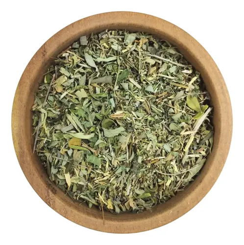
▼ Tocá para mas información
- ➥ Mejora la digestión: Alivia pesadez estomacal, elimina gases, calma los dolores de panza y reduce la acidez.
- ➥ Calma los nervios: Actúa como un ansiolítico y sedante natural que ayuda a bajar el estrés, relajar la mente y dormir mejor.
- ➥ Aporta nutrientes: Contiene antioxidantes y minerales (calcio, zinc y cobre).
🍵 Como preparar
↪ En una taza de agua caliente, agrega 5 a 10gr de burrito, tapa y
deja reposar unos 10min.
↪ Cuela el líquido y tomalo caliente o tibio.
⏰ Consume de 1 a 2 tazas de té al día
🧉 Le puedes agregar al mate o al tereré.
Moringa
▼ Tocá para mas información
- ➥ Aporta nutrientes: Llena tu cuerpo de Vitaminas, hierro, calcio y proteínas de alta calidad.
- ➥ Contiene antioxidantes: Protege tus células y combate el envejecimiento del cuerpo.
- ➥ Reduce inflamación: Alivia dolores corporales e inflamaciones internas.
- ➥ Controla el azúcar: Mantiene estables los niveles de glucosa en la sangre.
- ➥ Baja el colesterol: Cuida tu corazón al reducir las grasas malas.
- ➥ Mejora la digestión: Protege al estómago y ayuda a evitar la gastritis.
🍵 Como preparar
↪ Agrega moringa en una taza con agua caliente.
↪ Tapa y deja reposar 10min.
↪ Cuela el líquido y disfruta del "Té de Moringa".
💡 Puedes agregar unas gotas de limón o miel si preferís.
🧉 También le puedes agregar a tus mates.
Valeriana
▼ Tocá para mas información
- ➥ Combate el insomnio: Ayuda a recponciliar el sueño más rápido y mejora la calidad del descanso nocturno.
- ➥ Reduce la ansiedad: Calma la mente, alivia el estrés y promueve una sensación de tranquilidad.
- ➥ Alivia dolores corporales: Actúa como un relajante muscular natural y disminuye las molestias de los cólicos estomacales o menstruales.
🍵 Como preparar
↪ En una taza con agua caliente, agrega 2 o 3 ramas de valeriana.
↪ Tapa y deja reposar unos 10min.
↪ Saca las ramas del agua y tómalo caliente.
💡 Puedes tomarlo 2hs antes de dormir, ya que su uso continuo durante dos semanas
suele ofrecer los mejores resultados!.
Stevia
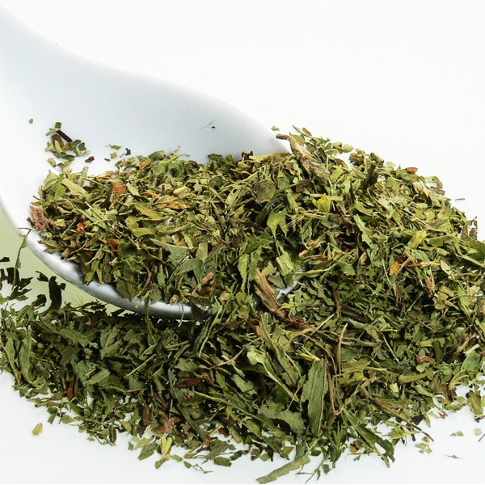
▼ Tocá para mas información
- ➥ Controla el azúcar: No eleva la glucosa en sangre, por lo que es ideal para personas con diabetes.
- ➥ Cero calorías: Ayuda a bajar de peso al reemplazar por completo el azúcar común.
- ➥ Presión saludable: Ayuda a regular la presión arterial y mejora la circulación.
🍵 Como preparar
🧉 Lo puedes agregar a los mates.
Boldo
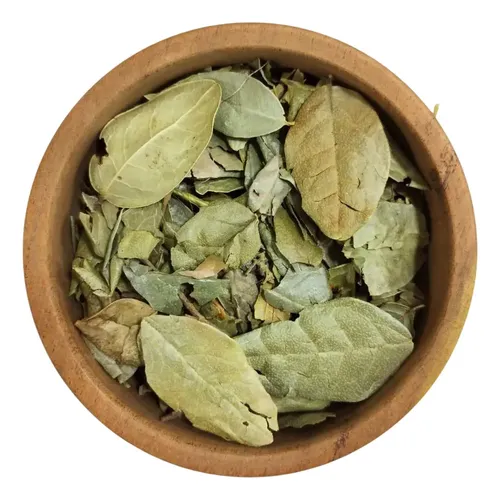
▼ Tocá para mas información
- ➥ Mejora la digestión: Alivia pesadez estomacal después de comidas abundantes.
- ➥ Protege al hígado: Estimula la producción de bilis y ayuda a depurar las toxinas del cuerpo.
- ➥ Reduce los gases: Evita la hinchazón de la panza y ayuda a eliminar el exceso de gases.
- ➥ Elimina líquidos: Actúa como un diurético natural para evitar la retención de agua.
🍵 Como preparar
↪ Poné algunas hojas secas en una taza con agua caliente.
↪ Tapá la taza y deja reposar entre 5-10min.
↪ Colá el líquido y tomalo tibio.
⏰ Para mejor digestón, puedes tomarla 1 taza después de almorzar o cenar (1-2 tazas por día).
💡 Si resulta muy amargo, puedes sumarle un chorrito de limón o un poquito de miel.
Graviola
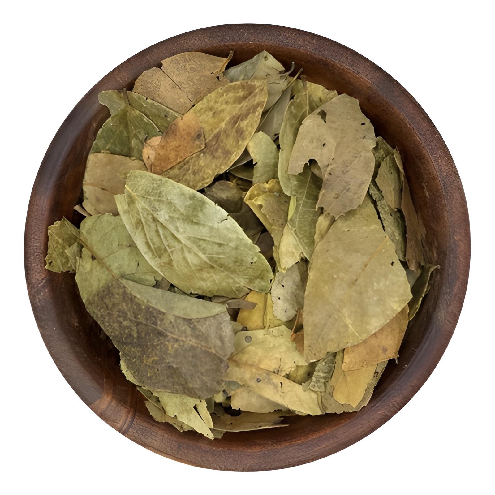
▼ Tocá para mas información
- ➥ Sube defensas: Su contenido de Vitamina C protege al cuerpo.
- ➥ Alivia dolores: Desinflama los músculos y las articulaciones.
- ➥ Mejora la digestión: Alivia el malestar del estómago y los cólicos.
- ➥ Ayuda a dormir: Calma los nervios y combate el insomnio.
- ➥ Controla el cuerpo: Ayuda a bajar la presión y el azúcar en sangre.
🍵 Como preparar
↪ En una taza con agua caliente, agrega entre 3 y 5 hojas secas de graviola.
↪ Tapa la taza y deja reposar durante 10min.
↪ Cuela el líquido y puedes tomarlo tibio o frío.
💡 Puedes agregar un chorrito de limón o miel.
⏰ Se recomienda tomarlo tras las comidas o en momentos que se busca relajación.
Palta anisada

▼ Tocá para mas información
- ➥ Alivia la indigestión: Calma gases, la pesadez y la hinchazón del estómago.
- ➥ Reduce los dolores: Alivia cólicos menstruales y dolores de cabeza leves.
- ➥ Efecto relajante: Calma los nervios y disminuye el estrés cotidiano.
🍵 Como preparar
↪ En una taza con agua caliente, coloca una cucharadita de palta anisada.
↪ Tapa y deja reposar 10min.
↪ Cuela el líquido y tomalo.
🧉 Lo puedes agregar en los mates.
Ruda
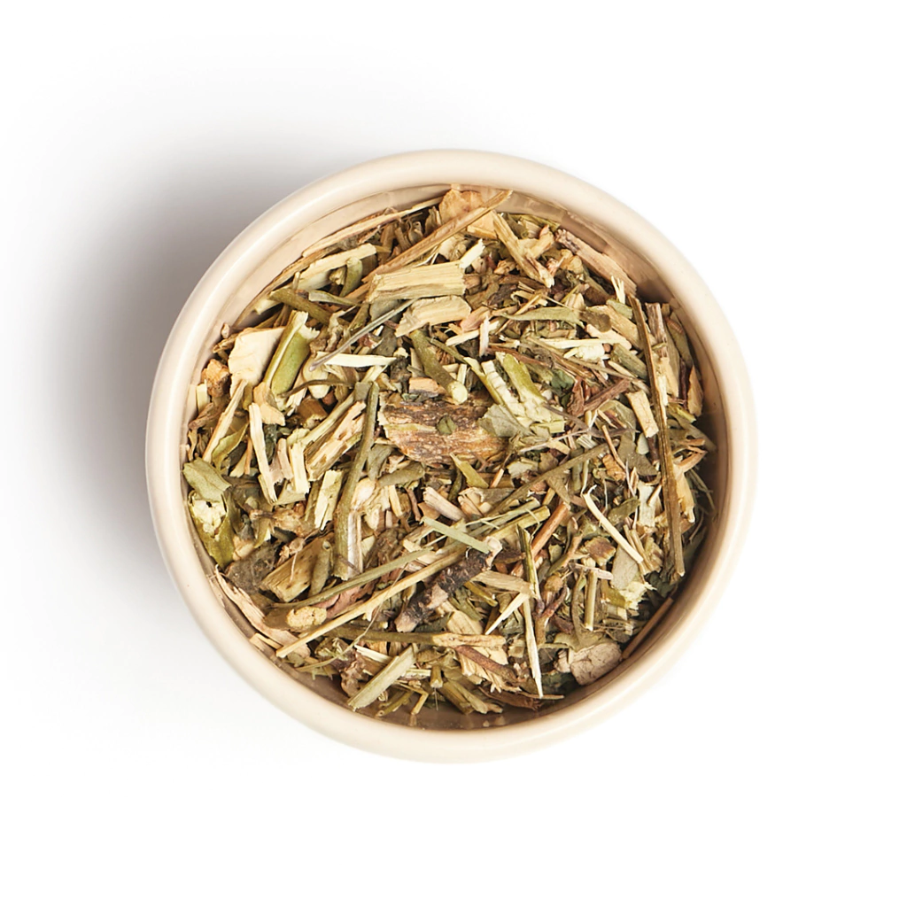
▼ Tocá para mas información
- ➥ Alivia el estómago: Calma cólicos, gases y mejora digestiones lentas.
- ➥ Regula menstruación: Ayuda a equilibrar el ciclo y disminuye los dolores menstruales.
- ➥ Mejora la circulación: Refuerza los vasos sanguíneo, ayudando con várices y piernas cansadas.
- ➥ Efecto relajante: Reduce el estrés leve, los dolores de cabeza y ayuda a dormir mejor.
- ➥ Uso externo: Combate piojos y calma dolores musculares o reumáticos en la piel.
- ➥ Tradicionalmente se usa en el hogar para alejar las malas energías.
🍵 Como preparar
↪ En una taza de agua caliente, agrega aprox. 1 o 2gr de ruda.
↪ Tapa y deja reposar 10min.
↪ Cuela el líquido y ya puedes tomarlo.
🧉 Le puedes agregar al mate.
⏰ Se recomienda tomar solo 1 taza al día.
NO CONSUMIR POR MÁS DE 7 DÍAS SEGUIDOS
Lapacho
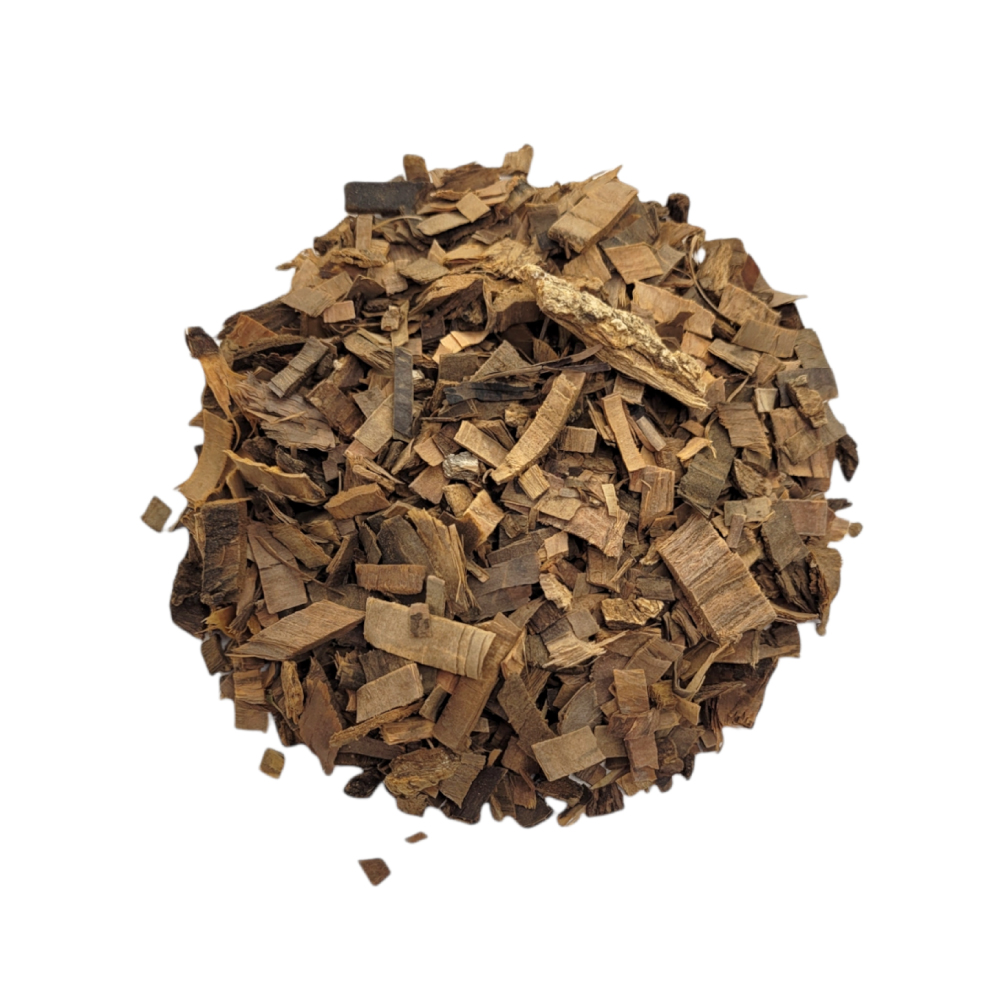
▼ Tocá para mas información
- ➥ Sube defensas: Fortalece el sistema inmunológico frente a virus y resfríos.
- ➥ Calma dolores: Actúa como antiinflamatorio natural para el cuerpo.
- ➥ Combate hongos y bacterias: Ayuda a frenar infecciones comunes.
- ➥ Protege las células: Aporta antioxidantes que cuidan el organismo.
- ➥ Limpia el cuerpo: Colabora en los procesos de digestión y depuración.
🍵 Como preparar
↪ Hervís una cucharada de lapacho en una taza de agua durante 5min.
↪ Apagás el fuego, dejás reposar y colás antes de tomar.
🧉 Lo puedes añadir al mate.
Amargon - Diente de Leon
▼ Tocá para mas información
- ➥ Limpia el hígado: Ayuda a desintoxicarlo y mejora la digestión de las grasas.
- ➥ Elimina líquidos: Actúa como un diurético, lo que ayuda a deshinchar el cuerpo y limpiar los riñones.
- ➥ Mejora la digestión: Alivia el malestar estomacal y combate el estreñimiento leve.
- ➥ Aporta nutrientes: Contiene gran cantidad de vitaminas y minerales buenos para las defensas.
🍵 Como preparar
↪ En una taza con agua caliente, agrega 1 o 2 cucharaditas de amargon.
↪ Tapa y deja reposar 10min.
↪ Cuela el líquido y ya está listo para tomar.
🧉 Puedes agregar a tus mates
Carqueja
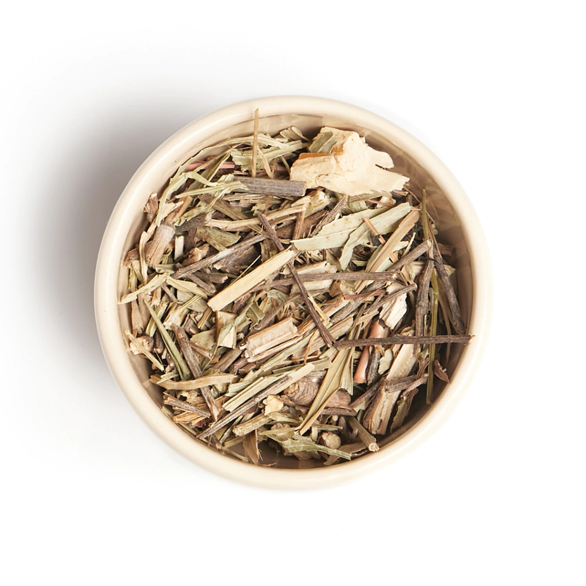
▼ Tocá para mas información
- ➥ Mejora la digestión: Alivia la acidez, los gases, la gastritis y la pesadez estomacal.
- ➥ Protege al hígado: Ayuda a limpiar el organismo y estimula la producción de bilis.
- ➥ Elimina líquidos: Actúa como un diurético, lo que ayuda a deshinchar el cuerpo.
- ➥ Regula el azúcar: Colabora en el control de la glucemia en la sangre.
🍵 Como preparar
↪ En una taza con agua caliente, agrega 1 cucharada de carqueja.
↪ Tapá la taza y deja reposar 10min.
↪ Colá la preparación antes de tomarla.
⏰ Tomar entre 1 y 3 tazas al día, toma después de las comidas principales (almuerzo y cena).
Pasionaria

▼ Tocá para mas información
- ➥ Reduce la ansiedad: Alivia el estrés, el nerviosismo y la tensión del día.
- ➥ Combate el insomnio: Ayuda a dormir más rápido y a tener un sueño más profundo.
- ➥ Alivia dolores musculares: Relaja el cuerpo y calma tensiones o contracturas.
- ➥ Mejora la digestión: Calma los dolores de panza causados por los nervios.
🍵 Como preparar
↪ En una taza con agua caliente, agrega una cucharadita de pasionaria.
↪ Tapa y deja reposar 10min.
↪ Colá el líquido y ya lo puedes tomar.
⏰ Si es para el estrés, se toma durante el día.
Si es para dormir, se toma una taza media hora antes de acostarse.
Alcachofa

▼ Tocá para mas información
- ➥ Protege al hígado: Estimula la producción de bilis y ayuda a limpiar toxinas.
- ➥ Mejora la digestión: Alivia los gases, la pesadez y ayuda a procesar las grasas.
- ➥ Elimina líquidos: Actúa como diurético, lo que reduce la hinchazón del cuerpo.
- ➥ Controla el colesterol: Ayuda a bajar los niveles de grasa mala en la sangre.
🍵 Como preparar
En una taza con agua caliente, agrega 1 cucharadita de alcachofa.
↪ Tapa la taza y deja reposar 10min.
↪ Cuela el líquido y ya se puede consumir.
⏰ Lo ideal es tomar de 2 a 3 tazas al día.
Se recomienda tomarlo antes de las comidas principales (almuerzo y cena).
Melisa

▼ Tocá para mas información
- ➥ Reduce el estrés: Calma la ansiedad y los nervios.
- ➥ Mejora el sueño: Ayuda a dormir mejor y combate el insomnio.
- ➥ Alivia la digestión: Quita los gases, la hinchazón y los dolores de panza.
- ➥ Calma dolores: Alivia dolores de cabeza y dolores menstruales.
- ➥ Protege el corazón: Controla las palpitaciones causadas por los nervios.
🍵 Como preparar
↪ En una taza con agua caliente, agrega 1 cucharada pequeña de melisa (unos 2 o 3gr).
↪ Tapá la taza y dejá reposar 10min.
↪ Colá la preparación y tomala.
💡 Podés endulzarla con un pcoo de miel si preferís.
🧉 Le puedes añadir al mate (ideal para el día a día).
Cola de caballo

▼ Tocá para mas información
- ➥ Elimina líquidos: Actúa como un potente diurético natural contra la retención de líquidos.
- ➥ Fortalece el cuerpo: Su alto contenido de silicio mejora la salud de uñas, cabello y huesos.
- ➥ Limpia los riñones: Ayuda a cuidar el sistema urinario y a eliminar toxinas.
- ➥ Ayuda a cicatrizar: Favorece la curación de heridas de la piel cuando se usa de forma externa.
🍵 Como preparar
↪ Agrega agua caliente en una taza y añade 1 cucharadita de cola de caballo.
↪ Tapá la taza y deja reposar 10min.
↪ Colá el líquido y ya puedes consumir caliente o fría.
🩹 La infusión fría se puede aplicar sobre la piel para limpieza o cuidado del cabello.
Yerba de pollo

▼ Tocá para mas información
- ➥ Alivia el empacho: Calma la indigestión, los gases y el dolor de panza.
- ➥ Limpia el cuerpo: Ayuda a eliminar líquidos y toxinas a través de la orina.
- ➥ Desinflama: Reduce la hinchazón en el cuerpo y las articulaciones.
- ➥ Protege al hígado: Mejora el funcionamiento del sistema digestivo en general.
🍵 Como preparar
↪ En una taza con agua caliente, agrega 1 cucharadita de yerba de pollo.
↪ Tapar la taza y dejá reposar 10min.
↪ Colar el líquido antes de beberlo.
Salvia
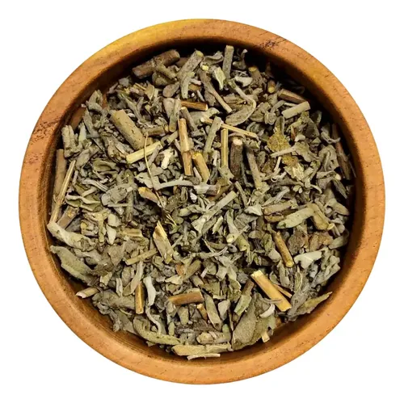
▼ Tocá para mas información
- ➥ Mejora la digestión: Alivia los gases, la hinchazón y el dolor de panza.
- ➥ Controla los sofocos: Reduce los calores y la sudoración excesiva durante la menopausia.
- ➥ Alivia la garganta: Desinflama y combate bacterias al usarla para hacer gárgaras.
- ➥ Ayuda a la mente: Mejora la memoria, la concentración y la atención.
- ➥ Baja el azúcar: Ayuda a disminuir los niveles de glucosa en la sangre.
- ➥ Cuida las células: Sus antioxidantes protegen al cuerpo del envejecimiento celular.
🍵 Como preparar
↪ Agrega agua caliente en una taza, luego añade una cucharadita (aprox. 1-2gr) de salvia.
↪ Tapá la taza y deja reposar 10min.
↪ Colá el líquido y ya puedes consumirla.
💡 Puedes endulzarlo con miel o agregarle unas gotas de limón.
⏰ Beber entre 2 y 3 tazas al día.
Consumirla después de las comidas principales(almuerzo y cena) para mejorar la digestión.
Eucalipto
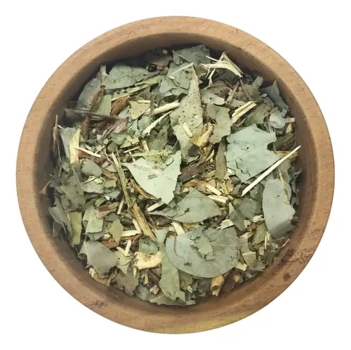
▼ Tocá para mas información
- ➥ Destapa las vías respiratorias: Ayuda a expulsar los mocos y alivia la tos o la congestión.
- ➥ Combate gérmenes: Funciona como un desinfectante natural contra bacterias y virus.
- ➥ Calma el dolor: Reduce la inflamación en los músculos y ayuda a aliviar los dolores de cabeza.
- ➥ Mejora el aliento: Elimina las bacterias de la boca y cuida las encías.
🍵 Como preparar
↪ En una taza con agua caliente, agrega 2-3gr de las hojas de eucalipto.
↪ Tapá la taza y dejá reposar 10min.
↪ Colá el líquido y ya está listo para consumirla.
⏰ La dosis general para adultos es de 2-3 tazas al día
Ambay
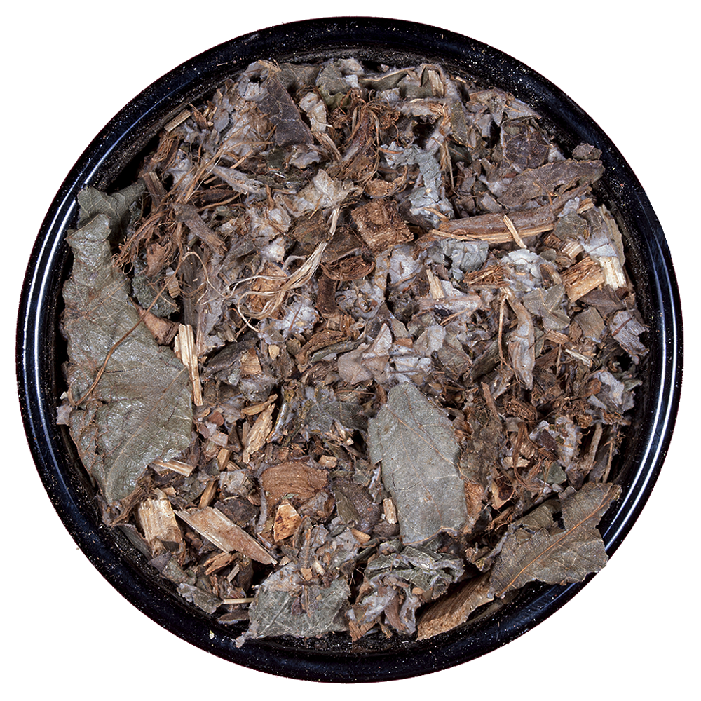
▼ Tocá para mas información
- ➥ Alivia la tos: Calma la tos seca y los accesos de tos.
- ➥ Expulsa la mucosidad: Funciona como un excelente expectorante, ideal para resfríos y bronquitis.
- ➥ Mejora la respiración: Relaja los bronquios y ayuda a aliviar los síntomas del asma.
- ➥ Baja la fiebre: Tiene un efecto leve para reducir la temperatura corporal.
- ➥ Cuida el corazón: Actúa como un tónico suave que ayuda a regular los latidos.
🍵 Como preparar
↪ En una taza con agua caliente, coloca 1 o 2 cucharaditas de la hierba ambay.
↪ Tapá la taza y dejá reposar unos 10min.
↪ Colá el líquido y ya lo puedes beber.
⏰ Podés tomar entre 2 y 3 tazas al día, preferentemente calentito.
💡 Lo puedes endulzar con 1 cucharadita de miel.
Cedron
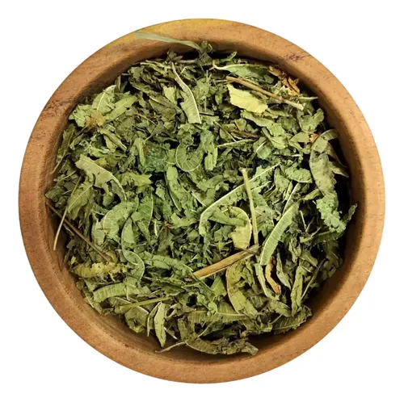
▼ Tocá para mas información
- ➥ Mejora la digestión: Alivia los gases, la hinchazón y calma los dolores de panza.
- ➥ Reduce el estrés: Ayuda a relajar el cuerpo, calma la ansiedad y ayuda a dormir mejor.
- ➥ Cuida tus células: Tiene antioxidantes que protegen al cuerpo y desinflaman.
- ➥ Combate bacterias: Ayuda a defender el cuerpo en estados gripales.
🍵 Como preparar
↪ En una taza con agua caliente, agrega una cucharadita de cedron.
↪ Tapá la taza y dejalo reposar 10min.
↪ Colá y tomá caliente.
⏰ Se recomienda tomar 1 taza después de almorzar o cenar para la digestión.
También puedes tomar antes de acostarte para relajarte.
🧉 Le puedes añadir al mate.
Frutos Secos
Almendras

✨ Descubrí sus propiedades
- ➥ Protege al corazón.
- ➥ Regula el azúcar en sangre.
- ➥ Promueve la salud de la piel y el cerebro.
🥄 Ideas para disfrutar
⇢ Combinala con pasas de uva y semillas para un increible snack.
⇢ Sumalas picadas al yogur con frutas o a la avena del desayuno.
Nueces

✨ Descubrí sus propiedades
- ➥ Baja el colesterol "malo" y cuidan tus arterias.
- ➥ Mejoran la memoria y protegen la salud de tu cerebro.
- ➥ Gracias a su melatonina natural, ayuda a regular el sueño.
- ➥ Aporta magnesio y potasio para tus músculos.
🥄 Ideas para disfrutar
⇢ Sumalas picadas a tu yogur, avena o tazón de frutas para empezar el día con energía.
⇢ Leva un poco a un lugar donde pasas más tiempo para calmar el hambre entre comidas.
⇢ Pastas y salsas.
⇢ Agregalas a tus budines, galletitas de avena, panes caseros o brownies.
Pistacho

✨ Descubrí sus propiedades
- ➥ Cuidan tu corazón.
- ➥ Mantienen el azúcar en sangre controlado.
- ➥ Gracias a sus nutrientes, protegen tus ojos del daño del sol y de pantallas.
- ➥ Mejora la digestión.
- ➥ por su gran cantidad de potasio y magnesio, evitan los calambres.
🥄 Ideas para disfrutar
⇢ Comelos solos, tostados y con una pizca de sal marina.
⇢ Picá un puñado y sumalos a tu yogur con frutas.
⇢ Trituralos bien y sumalos arriba de una bocha de helado de crema o chocolate amargo.
⇢ Untá una tostada con queso crema o palta, y tira los pistachos picados por arriba.
Damasco deshidratado

✨ Descubrí sus propiedades
- ➥ Actúa como un motor para la digestión gracias a su fibra.
- ➥ Cuida tus ojos y hace que tu piel se vea más sana.
- ➥ Te ayuda a eliminar el exceso de líquido acumulado.
- ➥ Es como un cargador natural cuando te sentís cansado.
- ➥ Ideal para comer después de mover el cuerpo y recuperar fuerzas.
- ➥ Colabora con mantener la estructura de todo tu esqueleto.
🥄 Ideas para disfrutar
⇢ Cortalos en cubitos y sumalos a tu yogur natural con un toque de avena.
⇢ Armá un frasco con nueces, almendras y damascos para acompañar el mate.
Maní sin sal

✨ Descubrí sus propiedades
- ➥ Reduce el colesterol "malo" y los triglicérido.
- ➥ Te llena por más tiempo gracias a su fibra.
- ➥ Ideal para los músculos por su magnesio y potasio.
- ➥ Retrasa el envejecimiento de las células.
- ➥ Al ser sin sodio, no sube la presión arterial.
🥄 Ideas para disfrutar
⇢ Lo puedes mezclar con frutas como manzana o banana untadas con pasta de maní.
⇢ Agrega en ensaldas picado para dar un toque crocante.
⇢ En yogur o avena para tus desayunos o meriendas.
⇢ Lo puedes comer solo.
Maní con sal

✨ Descubrí sus propiedades
- ➥ Aporta vitaminas (E y complejo B) y minerales esenciales (magnesio, fósforo y potasio).
- ➥ Ayuda a la salud cardiovascular.
- ➥ Mejora la función cerebral.
🥄Ideas para disfrutar
⇢ Mezcla con trocitos de chocolate amarg y pasa de uva para un mix de energía.
⇢ Cómelos solos acompañado de unos mates🧉.
Maní saborizado

✨ Descubrí sus propiedades
- ➥ Te da energía y ayuda a los músculos.
- ➥ Protegen a tu corazón y a tu salud.
- ➥ Ayuda a tu panza y te llena rápido.
- ➥ Cuidan tus células y tus defensas
🥄 Ideas para disfrutar
⇢ Sumalo a una picada saludable con aceitunas y daditos de queso.
⇢ Cómelos solos acompañado de mates🧉
Frutas Desecadas
Pasas Morochas

✨ Descubrí sus propiedades
- ➥ Contienen azúcares naturales que dan fuerza rápidamente.
- ➥ Ayudan a que el estómago funcione bien y evitan el estreñimiento
- ➥ Cuidan el corazón y controlan la presión.
- ➥ Ayudan a tener defensas fuertes, evitar anemia y cuidar los huesos.
- ➥ Protegen el cuerpo y ayudan a que las células no se dañen.
🥄 Ideas para disfrutar
⇢ Con yogur y cereales.
⇢ Podés preparar galletitas de avena y pasas, las clásicas.
⇢ Budines y panes.
Pasas de uva Rubias

✨ Descubrí sus propiedades
- ➥ Tienen azúcares naturales que te dan fuerza rápido.
- ➥ Aportan calcio y boro, que cuidan tus huesos.
- ➥ Tienen hierro que ayuda a evitar la anemia.
- ➥ Su fibra ayuda a una mejor digestión.
- ➥ El potasio que contiene, ayuda a controlar la presión.
- ➥ Tiene antioxidantes que ayudan a la protección del cuerpo.
🥄 Ideas para disfrutar
⇢ Topping de yogur o avena.
⇢ Qudan increíbles dentro de budines, galletas de avena y muffins.
⇢ Puedes comerlas solas en cualquier momento del día.
Arándanos

✨ Descubrí sus propiedades
- ➥ Evitan infecciones de orina.
- ➥ Protegen las células del desgaste.
- ➥ Cuidan al corazón y bajan el colesterol "malo".
- ➥ Ayuda a la digestión por su fibra.
🥄 Ideas para disfrutar
⇢ Con yogur y granola.
⇢ Cocina avena con leche o agua, y échale arándanos arriba para que se hidraten un poco con calor.
⇢ En licuados o batidos.
⇢ Los puedes comer solos curante el día.
Dátiles

✨ Descubrí sus propiedades
- ➥ Previenen infecciones urinarias.
- ➥ Contiene antioxidantes que ayudan a proteger las células y a mantener la piel y el cuerpo jóven.
- ➥ Cuidan el corazón, regulan el colesterol "malo" y mejora la circulación de la sangre.
🥄 Ideas para disfrutar
⇢ Abrí el dátil a la mitad, sacale el carozo y ponele adentro una almendra o nuez.
⇢ Rellenalos con un poco de manquequilla de maní.
Higos negros

✨ Descubrí sus propiedades
- ➥ Ayudan a proteger tu cuerpo del envejecimiento celular.
- ➥ Contienen calcio y potasio, esenciales para tu organismo.
- ➥ Ideales para un snack saludable ncualquier momento del día.
🥄 Ideas para disfrutar
⇢ Cortalos en pedacitos y sumalos a un yogur natural o una avena tibia. Quedan geniales si agregar un toque de canela.
⇢ Untá una tostada de pan integral con queso crema o ricota, poné láminas de higos por encima y sumá unas nueces picadas.
Coco Y Derivados
Coco rallado

✨ Descubrí sus propiedades
- ➥ Tiene grasas saludables que el cuerpo transforma en energía al instante.
- ➥ Ayuda a que la panza funcione bien y da sensación de estar lleno.
- ➥ Aporta gran cantidad de potasio y magnesio, que cuidan los músculos y el corazón.
🥄 Ideas para disfrutar
⇢ Puedes hacer mate de leche con coco rallado.
⇢ Pone en un bowl tu yogur preferido, sumale pedacitos de fruta fresca (banan, frutilla, kiwi),
⇢ Espolvoreá una buena cucharada de coco rallado por encima para darle un toque crocante y aromátivo.
Coco en escamas

✨ Descubrí sus propiedades
- ➥ Gracias a su cantidad de fibra, ayuda a que el intestino funcione bien y te haga sentir lleno por más tiempo.
- ➥ Da más energía de forma natural.
- ➥ Te da nutrienetes importantes (potasio, hierro, magnesio y zinc), para mantener fuertes tus defensas y músculos.
🥄 Ideas para disfrutar
⇢ Mezcla yogur natural, frutas secas (banana o frutilla) y una lluvia de escamas por encima.
⇢ Hornéalo junto con avena, almendras, miel y semillas para crear tu propia granola crocante.
⇢ Le puedes añadir a tus mates para darle un sabor diferente🧉.
Aceite de coco neutro

✨ Descubrí sus propiedades
- ➥ Estimula el metabolismo y ayuda a absorber mejor los nutrientes.
- ➥ Funciona como un excelente hidratante natural para la piel y el cabello.
- ➥ Contiene grasas saludable que el cuerpo transforma en energía inmediata.
- ➥ Ayuda a regular los niveles de colesterol, reduciendo triglicéridos y aumentando el colesterol "bueno".
🥄 Ideas para disfrutar
⇢ Usalo para cocinar verduras, carnes o pollo a fuego fuerte sin que el aceite se queme.
⇢ Reemplazá la manteca o el aceite común en tortas, budines y muffins usando la misma cantidad.
⇢ Sumá una cucharadita a tus batidos de frutas o proteínas para absorber mejor las vitaminas.
⇢ Para crema corporal, usalo después de salir de la ducha para dejar la piel super suave, ideal para zonas como codos y talones.
Aceite de coco virgen

✨ Descubrí sus propiedades
- ➥ Fortalece el sistema inmunológico al combatir bacterias y hongos.
- ➥ Contiene ácido láurico, que ayuda a combatir bacterias, hongos y virus.
- ➥ Ideal para cocinar y freir porque no se quema ni se daña a altas temperaturas.
- ➥ Ayuda a controlar el apetito de forma natural entre comidas.
🥄 Ideas para disfrutar
⇢ En ensaladas frescas, usalo derretido como aderezo junto con un toque de limón.
⇢ Usalo para cocinar verduras, pollo o carne a la plancha porque aguanta muy bien el calor.
⇢ Para mascarilla para pelo, aplicalo de medios a puntas una hora antes de lavarte la cabeza para dejarlo súper suave.
⇢ Usalo directo sobre la piel después de bañarte para hidratar zonas secas como codos y rodillas.
Leche de coco en polvo

✨ Descubrí sus propiedades
- ➥ Libre de gluten (sin TACC).
- ➥ Mejora la digestión (gracias a sus grasas de fácil absorción).
- ➥ Fortalece las defensas del cuerpo.
- ➥ Ayuda a controlar el peso al dar más saciedad.
- ➥ Previene la anemia gracias a su contenido de hierro.
- ➥ Cuida la salud de la piel y el cabello por sus vitaminas y antioxidantes.
- ➥ Mantiene los músculos sanos por su aporte de magnesio y potasio.
🥄 Ideas para disfrutar
⇢ Agrega una cucharita de polvo directo a tu taza de cafe caliente para lograr una cremosidad increíble.
⇢ Batila junto con banana, frutillas o mango congelado para obtener un desayuno súper energético.
⇢ Mezclá el polvo con cacao amargo y agua caliente para una versión más liviana y sin lactosa.
🌾Harinas
Harina de Pistacho

🌾 Descubrí sus beneficios.
👩🍳 Ideas para preparar
➼ Galletitas saludables.
➼ Budines y muffins, cambiá la parte de harina común por la de pistacho para que queden súper húmedos.
➼ Panqueques verdes.
➼ Trufas exprés, uní la harina con dátiles procesados o dulce de leche, armá bolitas y pasalas por coco rallado.
Harina de Arroz

🌾 Descubrí sus beneficios.
- ➥ Aporta mucha energía.
- ➥ Cuida al hígado (contiene colina).
- ➥ Rica en fibra (en su versión integral).
- ➥ Ayuda a controlar el colesterol.
- ➥ Aporta hierro, calcio y Vitaminas B.
- ➥ Baja en sodio.
- ➥ Sin gluten (apta para celíacos).
👩🍳 Ideas para preparar
➼ Panqueques de harina de arroz y avena.
➼ Bizcochos y budines.
➼ Crepes dulces, podes hacer la masa bien fina para rellenar con frutas, miel o chocolate.
Harina de coco

🌾 Descubrí sus beneficios.
- ➥ Alto contenido de fibra.
- ➥ Controla el azúcar en la sangre.
- ➥ Mejora la salud inmunológica y cardiovascular.
- ➥ Libre de gluten.
- ➥ Gran efecto saciante.
👩🍳 Ideas para preparar
➼ Licuados y yogures, aporta sabor dulce natural y una textura más espesa.
➼ En el mate o café.
➼ Espesante de salsas (sopas, cremas o salsas), sin necesidad de usar harina de trigo o almidón.
Harina de maíz

🌾 Descubrí sus beneficios.
- ➥ No tiene gluten(ideal para celíacos).
- ➥ Aporta mucha energía, gracias a sus carbohidratos.
- ➥ Mejora la digestión, por su alto contenido de fibra.
- ➥ Fortalece los huesos y músculos, gracias a sus minerales.
- ➥ Cuida el corazón por sus grasas saludables y potasio.
- ➥ Protege las células gracias a sus antioxidantes y vitaminas.
👩🍳 Ideas para preparar
➼ Polenta, cocinas la harina en agua hasta que quede como crema suave. Se acompaña con salsa de tomate y queso.
➼ Podés usarla para hacer pan de maíz o budines dulces para el mate🧉.
➼ Usala para rebozar milanesas, pollos o pescados antes de cocinarlos.¡Quedan súper crujientes!.
Harina de Almendra

🌾 Descubrí sus beneficios.
- ➥ No tiene gluten(ideal para celíacos).
- ➥ Reduce el colesterol malo y protege al corazón.
- ➥ Ayuda a regular los niveles de azúcar en sangre.
- ➥ Contiene minerales (calcio, magnesio y fósforo), fundamentales para la salud ósea.
👩🍳 Ideas para preparar
➼ Budines y tortas, reemplazando parte de la harina común por harina de almendra.
➼ Galletitas, mezclando harina de almendra con avena y miel.
➼ Panqueques, agregando harina de almendra a la mezcla para obtener una textura más suave y un sabor delicioso.
➼ Rebozados, usando harina de almendra para empanizar pollo, pescado o vegetales antes de cocinarlos.
Harina de Arveja

🌾 Descubrí sus beneficios.
- ➥ Regula el tránsito inestinal, ayudando a prevenir el estreñimiento.
- ➥ Contiene minerales como hierro, zinc y magnesio.
- ➥ Es ideal para personas con intolerancia al gluten.
- ➥ Contribuye a la saciedad y al control del apetito, lo que ayuda a mantener un peso saludable.
👩🍳 Ideas para preparar
➼ Pan de arveja, reemplazando parte de la harina común por harina de arveja.
➼ Panqueques y Crepes salados.
➼ Espesante Nutritivo para sopas y salsas..
➼ Rebozados, usando harina de arveja para empanizar pollo, pescado o vegetales antes de cocinarlos.
Harina de lino molido

🌾 Descubrí sus beneficios.
- ➥ Ayuda al colesterol "malo" y los triglicéridos, disminuyendo el riesgo de enfermedades cardíacas.
- ➥ Combate el estreñimiento, mejora el tránsito intestinal y puede ser aliada contra la gastritis..
- ➥ Aumenta la sensación de saciedad, lo que favorece la pérdida de peso.
👩🍳 Ideas para preparar
➼ Agregala a tus batidos de frutas o proteínas para aumentar el contenido de fibra y ácidos grasos omega-3.
➼ Espolvoreala sobre yogur, avena o ensaladas para un toque crujiente y nutritivo.
➼ Usala como sustituto parcial de la harina en recetas de panqueques, muffins, masa de pizza o galletas para aumentar el contenido de fibra y nutrientes.
Harina de sésamo

🌾 Descubrí sus beneficios.
- ➥ Gracias a su contenido de calcio, fortalece los huesos y ayuda a prevenir la pérdida de densidad ósea..
- ➥ Su alto contenido de fibra favorece el tránsito intestinal, estimula la digestión y combate el estreñimiento..
- ➥ Previene el colesterol y los triglicéridos.
- Rica en vitamina E, zinc y selenio, que protegen las células contra la oxidación.
- ➥ Pueden mejorar la salud de la piel y el cabello.
👩🍳 Ideas para preparar
➼ Usala sola o mezclada con pan rallado para rebozar milanesas, patitas de pollo o bastoncitos de queso.
➼ Espesante de salsas
➼ Saborizantes para purés.
➼ Agregala a tus batidos de frutas o proteínas para aumentar el contenido de fibra y ácidos grasos omega-3.
➼ Espolvoreala sobre yogur, avena o ensaladas para un toque crujiente y nutritivo.
Harina de avena

🌾 Descubrí sus beneficios.
- ➥ Su fibra atrapa las grasas para cuidar tu corazón.
- ➥ Controla el azúcar en la sangre.
- ➥ Combate el estreñimiento y cuida tu flora intestinal.
- ➥ Da mucha saciedad y ayuda a mantener un peso saludable.
- ➥ Baja el colesterol malo y protege el corazón.
👩🍳 Ideas para preparar
➼ Panqueques y crepes dulces o salados.
➼ Budines y tortas, reemplazando parte de la harina común por harina de avena.
➼ Licuados energéticos.
➼ rebozados crujientes.
➼ Espesante natural.
Harina integral de sarraceno

🌾 Descubrí sus beneficios.
- ➥ Contiene proteínas completas, fibras, antioxidantes y minerales como hierro y magnesio.
- ➥ Su fibra ayuda a mantener un buen tránsito intestinal.
- ➥ Ayuda a controlar los niveles de azúcar en la sangre.
- ➥ Contiene compuestos que ayudan a regular la presión y a cuidar las arterias.
- ➥ Es libre de gluten, ideal para personas con enfermedad celíaca.
👩🍳 Ideas para preparar
➼ Panqueques de desayuno.
➼ Poder usarla para hacer pasta oscura al estilo de los fideos de soba japoneses..
➼ Te sirve para armar masas saladas bien crocantes de agua con semillas.
➼ Rebozados crujientes.
➼ Espesante nutritivo.
Harina de algarroba

🌾 Descubrí sus beneficios.
- ➥ Por su cantidad de fibra, combate el estreñimiento y cuida la microbiota del intestino.
- ➥ Su bajo índice glucémico ayuda a mantener niveles estables de azúcar en sangre.
- ➥ Es libre de gluten, ideal para personas con enfermedad celíaca.
- ➥ No contiene cafeína ni teobromina, por lo que no altera el sueño ni los nervios.
- ➥ Aporta mucho calcio, hierro, potasio y antioxidantes que protegen las células del cuerpo.
👩🍳 Ideas para preparar
➼ Chocolatada saludable.
➼ Agregala a tus licuados de banana, a vena o frutos rojos para darle un toque dulce y achocolatado.
➼ Sustituto del cacao.
➼ Endulzante natural.
➼ Espolvoréa una cucharadita sobre tu yogur con cereales o frutas cortadas.
🥣 Premezclas Chacabuco
🍝 Premezcla con legumbres

Premezcla
🌿 ¿Por qué elegirla?
👩🍳 Ideas para preparar
🌾 ¿Qué contiene?
🍞 Premezclas Chacabuco Premium 1kg
🍝 Premezcla Especial para pastas

🌾 Harinas Funcionales Chacabuco
🌾 Harina Integral de Trigo Orgánica

Cereales
Bastón de salvado

✨ Ver propiedades
- ❖ Aceleran el tránsito instestinal y son muy eficaces contra el estreñimiento.
- ❖ Controlan el apetito y ayudan a mantener un peso saludable.
- ❖ Regulan los niveles de azúcar en la sangre y reduce los niveles de colesterol.
🥣 Como lo puedes consumir
➨ Mezclados con yogur natural o de vainilla.
➨ Con leche fría.
➨ Armá un snack para la tarde mezclando los bastones con nueces, almendras y pasas de uva 😋.
Tutuca
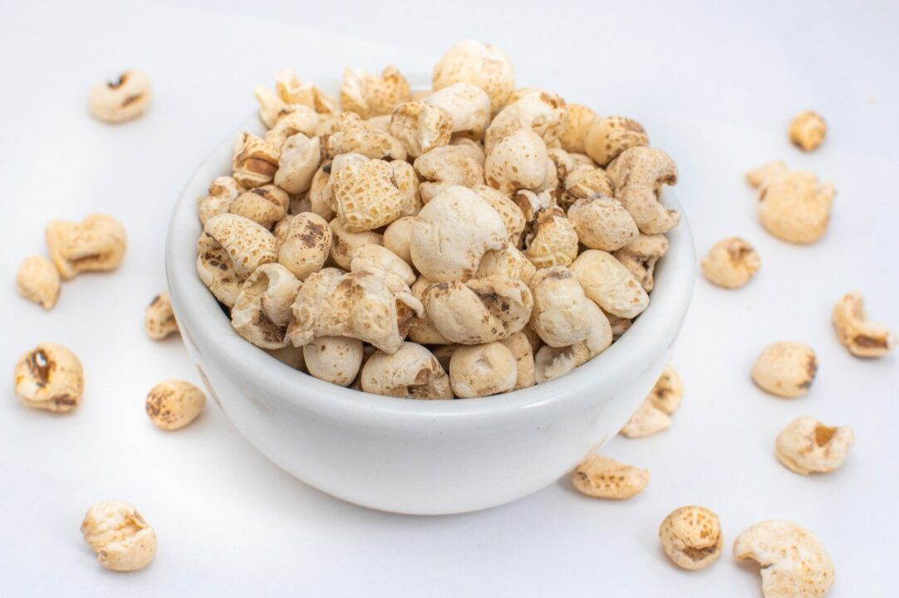
✨ Ver propiedades
- ❖ Aporta energía de forma simple.
- ❖ Bajo aporte calórico por volumen.
- ❖ Libre de gluten.
🥣 Como lo puedes consumir
➨ Lo puedes consumir solos en meriendas o desayunos.
Almohaditas rellenas
✨ Ver propiedades
🥜 Sabores disponibles
- ❖ Aportan energía para comenzar el día o disfrutar en una merienda.
- ❖ Aporte de fibra.
🥣 Como lo puedes consumir
➨ Lo puedes consumir con unos mates 🧉.
➨ Con lácteos(leche o yogur).
Quinoa pop

✨ Ver propiedades
🥣 Sabores disponibles
- ❖ Aporta todos los aminoácidos esenciales que el cuerpo necesita.
- ❖ Contiene alrededor de 5gr de proteína.
- ❖ Regula el tránsito inestinal y mejora la digestión.
- ❖ Aporta Vitaminas del complejo B(B1, B2, B3) y Vitaminas C y E.
- ❖ Apto para celíacos (sin TACC).
🥣 Como lo puedes consumir
➨ Con yogur natural o de vainilla.
➨ Con leche o bebidas vegetales (de almendras, avena o coco).
➨ Mezcladas con miel, pasta de mani y frutos secos para armar tus propias barritas energéticas sin horno.
Bolitas de chocolate

✨ Ver propiedades
- ❖ Fuente de energía
- ❖ Enriquecidas con Vitaminas del grupo B(B1, B2, B3, B6, B12), hierro, zinc y vitamina C.
- ❖ Gracias a su pequeña cantidad de fibra, ayuda levemente a la digestión.
🥣 Como lo puedes consumir
➨ Con leche fría o tibia.
➨ Con yogur.
➨ Como snack, directamente del paquete.
➨ Con avena.
Copos de maíz sin azúcar

✨ Ver propiedades
- ❖ Normalizan la digestión.
- ❖ Mejoran la memoria.
- ❖ Fuente de magnesio y zinc.
- ❖ Bajo en grasas.
🥣 Como lo puedes consumir
➨ Con lácteos (leche fría, leche vegetal o yogur natural).
➨ Mezclados con frutas secas cortadas (banana, frutillas o arándanos) y un poco de frutos secos (nueces o almendras).
Copos de maíz con azúcar

✨ Ver propiedades
- ❖ Aporte energético.
- ❖ Enriquecidas con hierro y Vitaminas del grupo B (como B6, B9 y B12).
- ❖ Se digieren rápido y no generan una sensación duradera.
🥣 Como lo piedes consumir
➨ Con lácteos.
➨ Con frutas.
➨ Puedes agregar nueces picadas, almendras o semillas para mejorar la saciedad y el valor nutricional.
Cereal de arroz

✨ Ver propiedades
- ❖ Bajo en calorías, aporta aprox.83 calorías.
- ❖ Aporte de energía.
- ❖ Vitaminas del complejo B, fósforo, magnesio y selenio.
- ❖ Libre de grasas.
🥣 Como lo puedes consumir
➨ Con yogur.
➨ Con leche vegetal o vacuna.
➨ Licúa tus frutas congeladas favoritas y usá el cereal por arriba como un agregado crujiente (topping).
➨ Barritas de cereal express.
Cereal multisemillas

✨ Ver propiedades
- ❖ Contiene proteínas completas que tus músculos necesitan.
- ❖ Contienen aminoácidos grasos Omega 3 y 6 (provenientes del lino y la chía) que ayudan a proteger al corazón.
- ❖ Son fuente natural de hierro, calcio, magnesio, zinc y fósforo.
- ❖ Brinda energía rápida y carbohidratos livianos ideales para arrancar el día o antes de hacer actividad física.
- ❖ Al no tener grasas trans ni colesterol, es un snack ideal para cuidar tus arterias y tu peso.
🥣 Como lo puedes consumir
➨ Con yogur o leche.
➨ En boles de frutas.
➨ Agrega 2 o 3 cdas en la licuadora acompañado de banana o frutas con leche.
Ositos de avena y miel

✨ Ver propiedades
- ❖ Aporte de energía duradera, gracias al maíz, el trigo y la avena.
- ❖ La avena contiene fibra soluble e insoluble. Esto ayuda que te sientas lleno más tiempo y evita los ataques de hambre a media mañana.
- ❖ Mejora la digestión.
- ❖ Enriquecen de nutrientes como hierro, calcio y Vitaminas del complejo B, estos elementos ayudan a un correcto funcionamiento de las defensas y músculos..
🥣 Como lo puedes consumir
➨ Con leche fría.
➨ Con bebidas vegetales (leche de almendras, coco o avena).
➨ Con yogur.
➨ Con boles de frutas.
Trigo inflado dulce

✨ Ver propiedades
- ❖ Aporta cerca de 100-114 calorías.
- ❖ Gracias a su alto contenido de hidratos de carbono de rápida absorción, proporciona energía de forma rápida.
-
❖
Contiene minerales (magnesio, silicio, calcio, hierro y fósforo), además de Vitaminas del grupo B (B1, B2, B3).
Esenciales para el metabolismo energético y el sistema nervioso.
🥣 Como lo puedes consumir
➨ Con yogur.
➨ Como snack.
➨ Como topping, espolvoreado sobre postres, helados o ensaladas de frutas.
➨ Combinado con frutos secos (almendras o nueces), para armar una merienda rápida.
Granolas
🌾 Tradicional
Granola Tradicional

✨ Que contiene
- ❖ Mezcla de Avena.
- ❖ Miel.
- ❖ Pasas de uva.
- ❖ Maní.
- ❖ Semillas.
- ❖ Frutos secos.
🥣 Ideas para disfrutar
➼ Mezcla tu yogur favorito (natural o griego) con una porción de granola para añadir una textura crocante.
➼ Unta una tostada con miel, canela o mantequilla de maní y esparce la granola encima.
➼ Acompaña rodajas de banana, frutilla o manzana con un puñado de granola.
⚡ Energética
Granola Energética

✨ Que contiene
- ❖ Mezcla de avena.
- ❖ Miel.
- ❖ Pasas de uva.
- ❖ Maní.
- ❖ Frutos secos.
- ❖ Arándanos deshidratados.
🥣 Ideas para disfrutar
➼ Úsala como topping crujiente en tus batidos de frutas para añadir textura.
➼ Barritas saludables.
➼ Agrega un puñado a tu avena remojada para darle un toque crocante al momento de comerla.
🥥 Cocada
Granola Cocada

✨ Que contiene
- ❖ Mezcla de cereales.
- ❖ Azúcar mascabo.
- ❖ Maní.
- ❖ Coco rallado.
- ❖ Semillas de girasol.
- ❖ Nueces.
🥣 Ideas para disfrutar
➼ Combinala con yogur natural o vegetal y frutas frescas de estacoón (como banana, frutillas o arándanos).
➼ Úsala como topping crocante sobre un licuado espeso de frjutas para darle textura y un extra de energía.
➼ Mezclala con miel o pasta de maní, presionar la mezcla en un molde y enfriar para obtener barritas de cereal naturales.
🟠 Base
Granola Base

✨ Que contiene
- ❖ Mezcla de avena.
- ❖ Azúcar mascabo.
- ❖ Maní.
- ❖ Semillas de girasol.
🥣 Ideas para disfrutar
➼ Añádela como topping a tu yogur favorito (especialm. griego) junto con frutas frescas (como banana, manzana o frutos rojos).
➼ Úsala como sustituto de los cereales industriales acompañándola con leche fría o bebidas vegetales (almendras, coco o nuez).
➼ Espolvoréala sobre rodajas de piña, papaya o un "banana split" saludable para aportar una textura crujiente.
Semillas
Chía
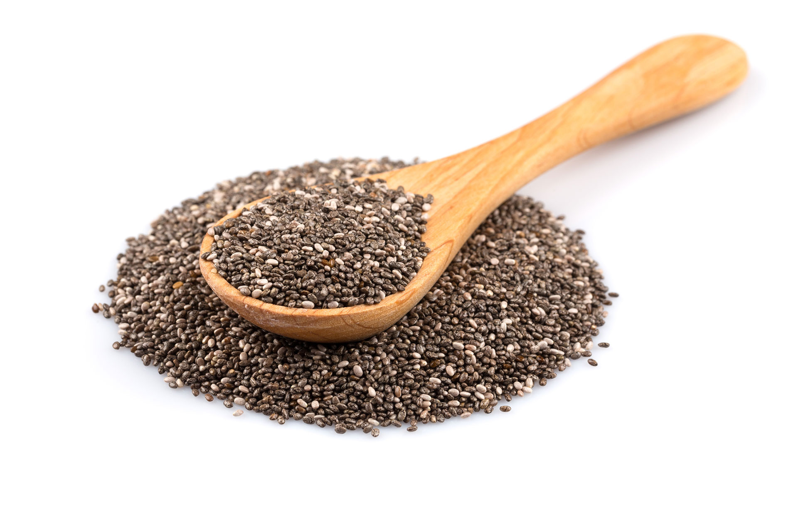
- 𖧧 Su fibra limpia y mejora la digestión.
- 𖧧 Se infla en la panza y te llena por más tiempo.
- 𖧧 Limpia el colesterol malo de las arterias.
- 𖧧 Evita que el azúcar te suba de golpe.
- 𖧧 Aporta mucho calcio y magnesio para cuidar tus huesos y dientes.
⮕ Agrega una cucharada sobre tu yogur o tazón de avena matutino, deja reposar 5min para que se ablanden antes de comer.
⮕ Sumá una cucharada a la licuadora cuando prepares batidos de frutas o jugos verdes.
⮕ Agrega una cucharada mezclada con agua, deja reposar 5-10min y tómalo en ayuna (puedes agregar un chorrito de limón).
Linaza
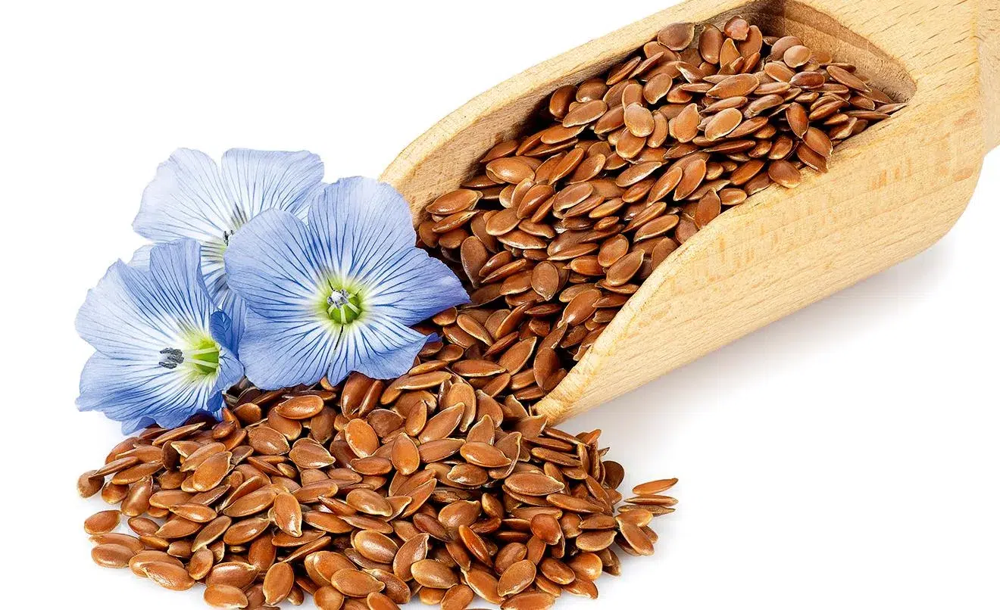
- 𖧧 Su fibra combate el estreñimiento de forma rápida.
- 𖧧 El Omega-3 vegetal limpia las arterias y baja el colesterol malo.
- 𖧧 Te llena por más tiempo, ayudando a controlar el peso.
- 𖧧 Evitan las subidas bruscas de glucosa en la sangre.
✨ Como lo puedes consumir
⮕ ¡Consúmelas siempre molidas para que tu cuerpo pueda absorber sus nutrientes!
⮕ espolvorea una cucharada sobre tu yogur favorito con frutas o granola.
⮕ Incorpóralas en masas de pan casero, crackers de semillas o incluso para preparar tortillas sin harina (solo lino molido y agua).
Girasol
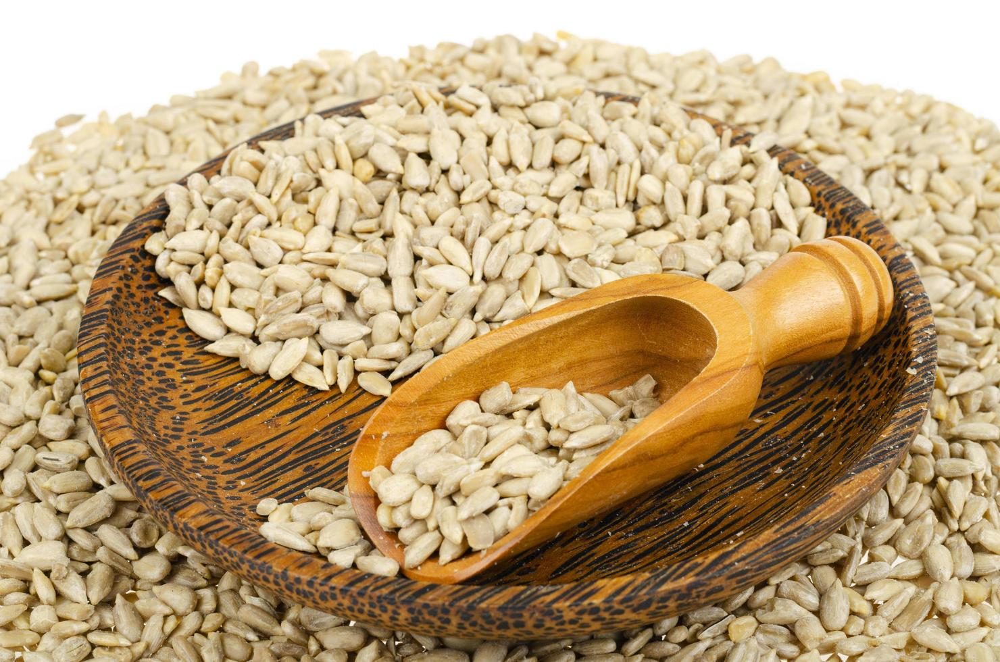
- 𖧧 Sus grasas buenas ayudan a bajar el colesterol malo.
- 𖧧 Tienen gran cantidad de Vitamina E que frena el envejecimiento.
- 𖧧 Aportan magnesio y calcio para mantener los huesos fuertes.
- 𖧧 Su zinc ayuda al cuerpo a evitar enfermedades.
- 𖧧 Son ideales para vencer el cansancio durante el día.
✨ Como lo puedes consumir
⮕ Por la mañana, añádelas a tu desayuno (yogur, avena o licuados).
⮕ A media tarde, consúmelas como un snack saludable entre comidas para calmar el hambre.
⮕ Espolvoréalas sobre ensaladas, sopas, cremas de verduras o úsalas para preparar panes caseros.
Calabaza
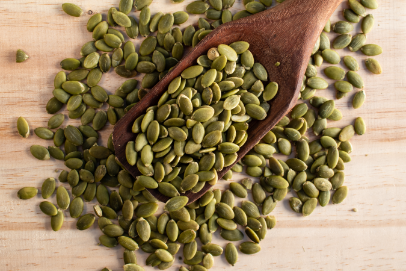
- 𖧧 Te ayudan a dormir más profundo.
- 𖧧 Protegen la salud masculina.
- 𖧧 Previenen la diabetes.
- 𖧧 Mantienen la presión arterial sana.
- 𖧧 Evitan que te enfermes seguido.
✨ Como lo puedes consumir
⮕ Agrega a ensaladas, sopas, yogur o avena.
⮕ Puedes licuarlas y sumarlas a tus licuados o batidos.
⮕ Se pueden consumir crudas directamente.
Sésamo blanco

- 𖧧 Aporta gran cantidad de calcio para el esqueleto.
- 𖧧 Limpian las arterias y bajan el colesterol.
- 𖧧 Mejoran la memoria y la concentración.
- 𖧧 Son ligeras y fáciles de procesar.
- 𖧧 Sus aceites naturales la hidratan por dentro.
✨ Como lo puedes consumir
⮕ Espolvorea una cucharada por encima de las ensaladas para darles un toque crujiente.
⮕ Agrégalo a tu tazón de yogur, avena o frutas picadas por la mañana.
⮕ Ponlo encima de una tostada con queso crema o aguacate (palta).
⮕ Úsalo para hacer panes caseros.
Sésamo integral

- 𖧧 Tienen muchísimo más calcio por su cáscara.
- 𖧧 Aportan mucha fibra para ir mejor al baño.
- 𖧧 Tienen hierro para dar fuerza a la sangre.
- 𖧧 Mantienen la energía estable.
- 𖧧 Su cáscara tiene potentes antioxidantes.
✨ Como lo puedes consumir
⮕ Agrégalos a tus desayunos para empezar el día con mucha fibra.
⮕ Ponlo encima de un pan con aguacate (palta) o queso crema.
⮕ Para panes y galletas caseras.
Sésamo negro

- 𖧧 Son las que tienen más antioxidantes.
- 𖧧 Aportan mucho calcio para el esqueleto.
- 𖧧 Tienen hierro para darte energía.
- 𖧧 Nutren desde adentro para dar brillo.
- 𖧧 Ayudan a proteger a tu corazón.
✨ Como lo puedes consumir
⮕ En tostadas por arriba del pan con queso.
⮕ En ensaladas y tartas.
⮕ Arroz y fideos estilo asiático.
⮕ Panes y galletitas caseras.
Zaragatona Psyllium

- 𖧧 Limpia el intestino y ayuda a ir al baño con facilidad.
- 𖧧 Absorbe el exceso de agua y da consistencia a las heces.
- 𖧧 Atrapa las grasas malas antes de que el cuerpo las absorba.
- 𖧧 Evita los picos altos de glucosa después de comer.
- 𖧧 Se infla en el estómago y ayuda a controlar el apetito.
✨ Como lo puedes consumir
⮕ Mezcla un poco directamente en tu yogur favorito, casi no tiene sabor así que no arruinará tu desayuno.
⮕ Esoesante de sopas y salsas.
⮕ En panadería (¡El ingrediente secreto sin gluten!)🤩.
Quinoa
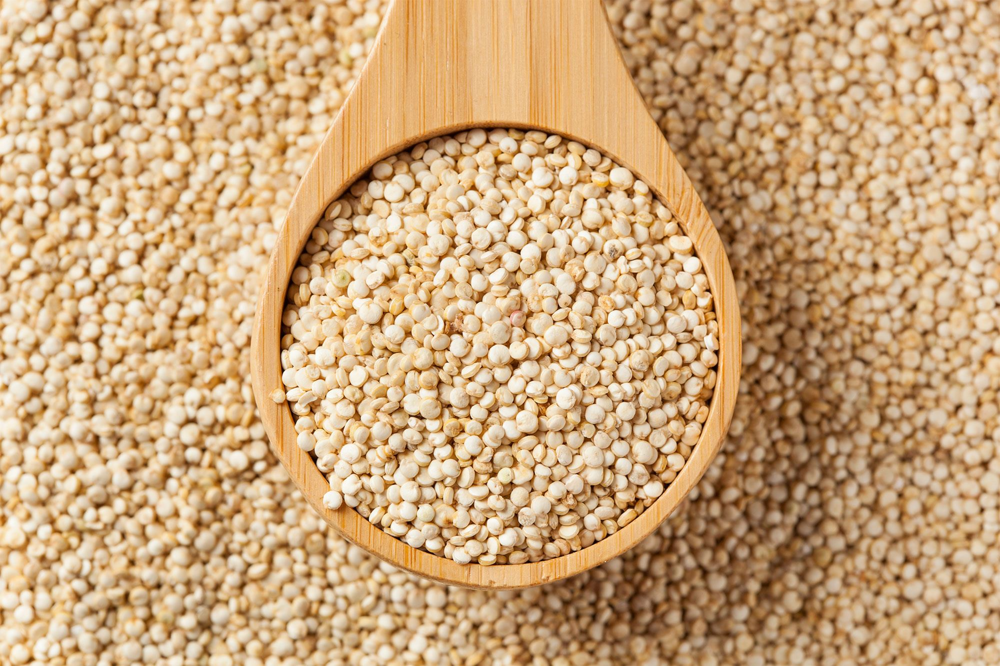
- 𖧧 Tiene todos los aminoácidos que tu cuerpo necesita.
- 𖧧 Su fibra te ayuda a ir mejor al baño.
- 𖧧 No da pocos altos de azúcar en la sangre.
- 𖧧 Ayuda a bajar el colestrol malo.
- 𖧧 Es perfecta para personas celíacas.
- 𖧧 Aporta mucho hierro y magnesio.
✨Como lo puedes consumir
⮕ Agrégalas a las ensaladas.
⮕ Úsala como guarnición para compañar carnes, pollos, pescados o vegetales salteados.
⮕ En el desayuno (estilo avena).
⮕ Mezcla la quinoa cocida con verduras ralladas, un huevo y pan rallado para formar medallones y dorarlos en la sartén.
Amaranto
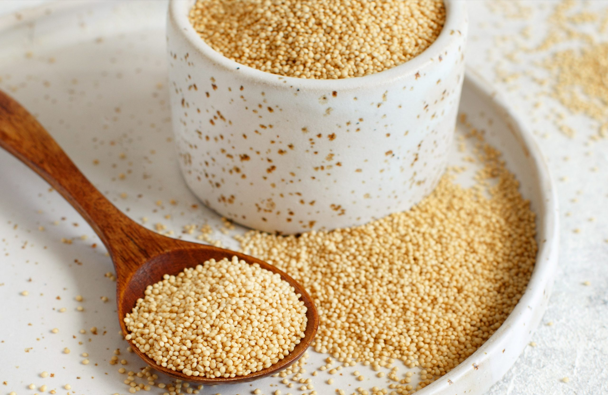
- 𖧧 Aporta mucho calcio y proteínas de gran calidad.
- 𖧧 Tiene gran cantidad de hierro para darte energía.
- 𖧧 Su fibra mejora la digestión y no contiene gluten.
✨ Como lo puedes consumir
⮕ Usa el amaranto como si fuera cereal crujiente arriba del yogur con frutas.
⮕ Pica una banana o una manzana, agrégale un hilo de miel y espolvorea el amaranto por encima.
⮕ Sumá una cucharada en tus licuados de frutas.
Mijo
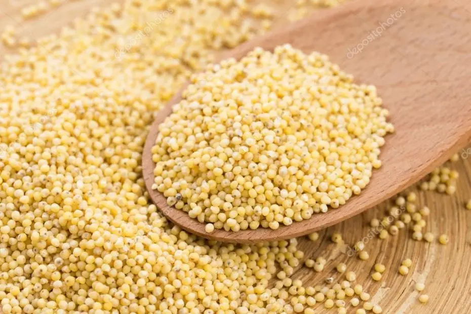
- 𖧧 Tiene mucho magnesio que te ayuda a relajarte y te da fuerzas.
✨ Como lo puedes consumir
⮕ Cocínalo con un poco de sal y úsalo para compañar pollo, carne, pescado o tus vegetales favoritos.
⮕ Deja enfriar el mijo cocido y mézclalo con tomate, cubitos de queso, albahaca y un chorrito de aceite de oliva.
⮕ En sopas y guisos.
Amapola
- 𖧧 Relajan el sistema nervioso, ideales paar reducir el estrés y dormir mejor.
- 𖧧 Tienen muchísimo calcio y fósforo, lo que ayudan a cuidar tus dientes y esqueleto.
- 𖧧 Aportan grasas saludables (Omega-3 y 6) que protegen tus arterias y zinc para reforzar tu sistema inmune.
✨ Como lo puedes consumir
⮕ Budín de limón y amapola, la combinación más famosa del mundo.
⮕ Espolvorea las semillas por encima del yogur con un poco de frutas o avena.
⮕ Ponlo un poco por encima de tostadas con queso crema, mermelada o palta.
🌿 Especias y condimentos
Canela en polvo
- 💠 Controla la glucosa y evita los antojos de dulce.
- 💠 Alivia dolores en el cuerpo y protege tus células.
- 💠 Evita los gases y la hinchazón de la panza.
🥣 Como lo puedes consumir
⮕ Agrega una pizca directo a tu taza diaria para endulzar de forma natural sin usar azúcar.
⮕ Leche con canela.
⮕ Queda espectacular si la sumas a batidos que tengan banana, manzana o avena..
⮕ Agrega media cucharita arriba de tu tazón de avena o de tu yogur con cereales.
Canela en rama

- 💠 Sus aceites naturales calman rápido los dolores de panza y los gases.
- 💠 Mantiene el azúcar bajo control para que no tiente lo dulce.
- 💠 Ideal para calmar la tos, dolor de garganta y calentar el cuerpo.
🥣 Como lo puedes consumir
⮕ Té de canela cásico.
⮕ Para saborizar tu café o té.
⮕ Arroz con leche tradicional.
⮕ Salsas y guisos.
Canela quebrada

- 💠 Sus trozos sueltas nutrientes que controlan la glucosa de forma muy eficiente.
- 💠 Calma la acidez, dolores de panza y los gases en minutos.
- 💠 Sus antioxidantes protegen tus células y reducen la hinchazón.
🥣 Como lo puedes consumir
⮕ Té express de canela.
⮕ Saborizar el termo del mate.
⮕ En tu café de filtro.
⮕ Arroz con leche y avena.
Clavo de olor

- 💠 Actúa como un anestésico natural, ideal para el dolor de muelas o encías.
- 💠 Desinflama la panza y mejora la digestión pesada rápidamente.
- 💠 Combate bacterias en la boca y ayuda a eliminar el mal aliento.
🥣 Como lo puedes consumir
⮕ Té digestivo, agregando 2 clavos de olor a una taza con agua caliente, deja reposar 5min y tómalo después de comer.
⮕ Mate aromático.
⮕ Suma 1 clavo de olor en el filtro junto con el café molido antes de pasar el agua.
⮕ Pon 1 clavo de olor en el agua donde vas a hervir el arroz. Le da un aroma delicioso estilo oriental.
Clavo de olor en polvo

- 💠 Calma dolores corporales y de muelas de forma muy rápida.
- 💠 Reduce los gases y las digestiones pesadas casi al instante.
- 💠 Aporta muchos antioxidantes que desinflaman todo tu cuerpo.
🥣 Como lo puedes consumir
⮕ Mezcla para repostería (galletas, budines o pancakes).
⮕ Hierve agua con una ramita de canela y un trozo de jenjibre fresco. Luego agrega té negro (o bebida vegetal) y una pizca de clavo de olor en polvo.
Endulza con miel.
Anís estrellado

- 💠 Quita los gases, desinflama el estómago y mejora la digestión pesada.
- 💠 Ayuda al cuerpo a protegerse de los virus y bacterias.
- 💠 Limpia los pulmones y abre las vías respiratorias si tienes un resfriado.
- 💠 Combate los gérmenes de la boca y quita el mal olor si masticas un pedacito.
🥣 Como lo puedes consumir
⮕ Puedes agregar en el mate🧉.
⮕ Infusión sencilla.
⮕ Agrega media estrella a tu taza de té habitual mientras reposa para darle un toque dulce y aromático.
Anís estrellado en tallo

- 💠 Desinflama la panza y alivia dolores de estómago.
- 💠 Abre los pulmones y ayuda a respirar mejor si estás resfriado.
- 💠 Combate gérmenes y hongos en el cuerpo.
- 💠 Al ser tallos y trozos sueltos, es más económico pero funciona igual de bien que las estrellas enteras.
🥣 Como lo puedes consumir
⮕ Té digestivo para después de comer.
⮕ Si tomás mate, agrega una pizca de estos tallos mezclados directamente con la yerba🧉.
Cúrcuma en polvo

- 💠 Desinflama el cuerpo y alivia las articulaciones.
- 💠 Evita los gases y quita la hinchazón de la panza.
- 💠 Funciona como un fuerte antioxidante que protege tus células.
- 💠 Ayuda a mejorar la circulación de la sangre.
🥣 Como lo puedes consumir
⮕ Mezcla media cucharita de cúrcuma, una pizca de pimienta negra y un chorrito de jugo de limón en medio vaso de agua. Tómatelo de un trago por la mañana.
⮕ Agrega una pequeña piozca a tu café mañanero o a un té verde caliente.
Jengibre en polvo

- 💠 Calma rápido el asco, los mareos y el malestar de estómago.
- 💠 Alivia el dolor de músculos y articulaciones.
- 💠 Calienta el cuerpo, quita la tos y afloja los mocos.
- 💠 Evita los gases y hace que la comida no te caiga pesada.
🥣 Como lo puedes consumir
⮕ Té express limpia-garganta.
⮕ En tu café matutino.
⮕ Échale media cucharita a tus licuados de fruta (combina perfecto con manzana, piña o banana).
Contacto
Estamos para ayudarte y asesorarte en la elección de nuestros productos. No dudes en contactarnos a través de nuestro Whatsapp o redes sociales.
Consultanos directamente
Abrir WhatsApp →@andresitosaludable
📍Dirección
Andresito, Misiones Calle Neuquen
Frente al Supermercado El Gallego de la rotonda.
🕒 Horarios
Lunes a Viernes
08:00 a 12:00hs
15:30 a 19:30hs
Sábados
08:00 a 12:00hs
16:30 a 19:30hs
Categorías de nuestros productos
💪
Suplementos
Toca para ver →
🌱
Hierbas Medicinales
Toca para ver →
🥜🥥
Frutos Secos/Desecos.
Coco y Derivados.
Toca para ver →
🌾
Harinas y Premezclas.
Toca para ver →
🥣
Cereales
Toca para ver →
🌱
Semillas
Toca para ver →